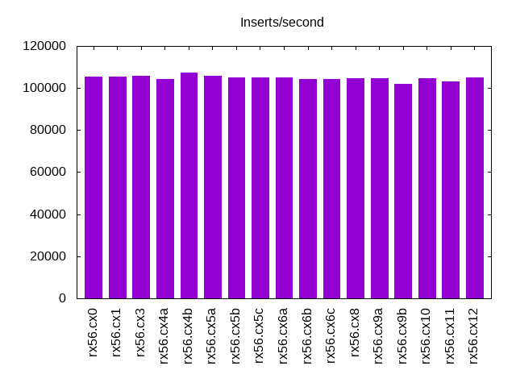
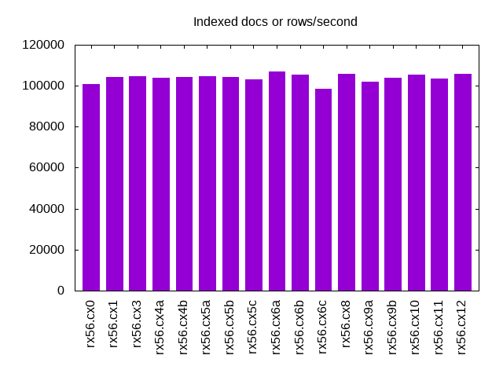
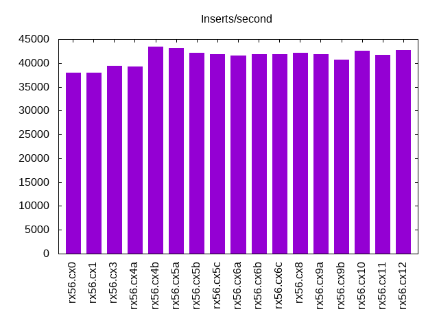
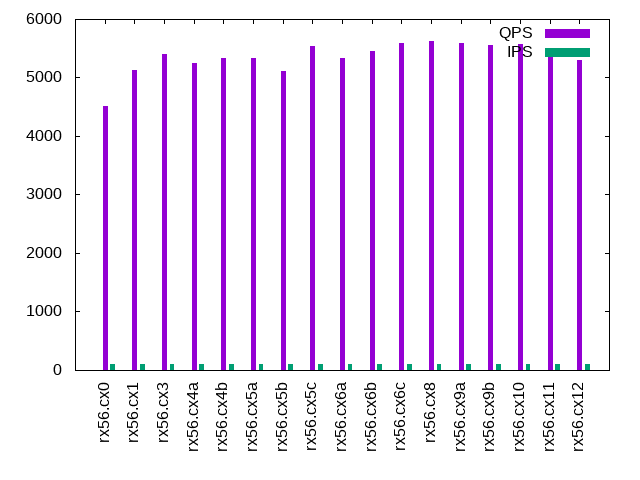
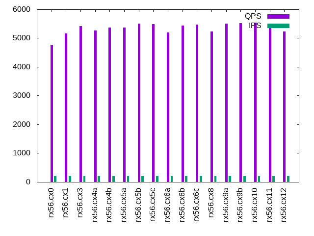
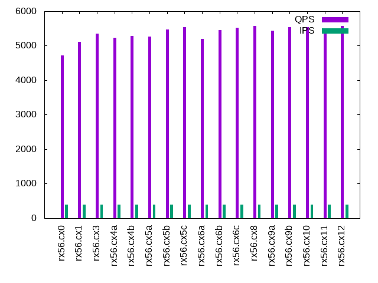
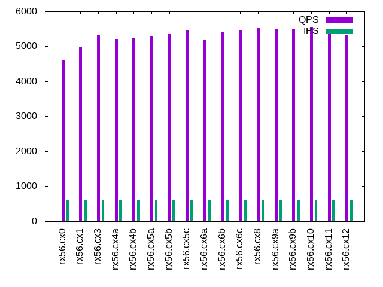
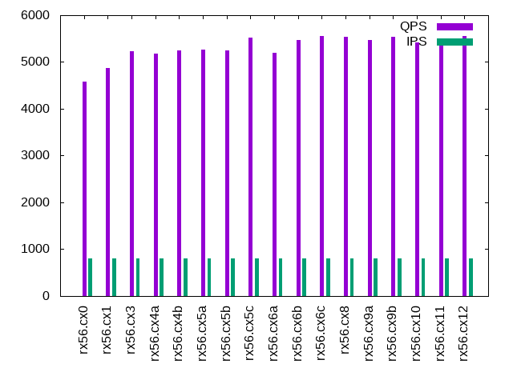
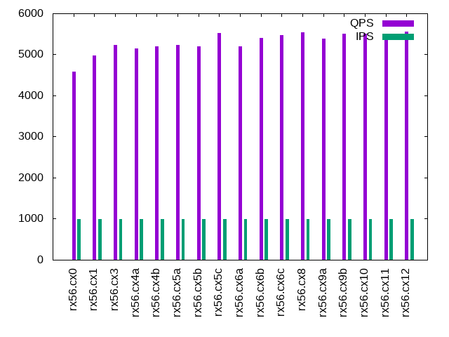

This is a report for the insert benchmark with 100M docs and 1 client(s). It is generated by scripts (bash, awk, sed) and Tufte might not be impressed. An overview of the insert benchmark is here and a short update is here. Below, by DBMS, I mean DBMS+version.config. An example is my8020.c10b40 where my means MySQL, 8020 is version 8.0.20 and c10b40 is the name for the configuration file. All configurations are stored here.
The test server is described here. Clients and the DBMS shared the same host running Ubuntu 18.04.5. All tests used MyRocks with MySQL 5.6.35. The configurations for MyRocks are here.
The numbers are inserts/s for l.i0 and l.i1, indexed docs (or rows) /s for l.x and queries/s for q*.2. The values are the average rate over the entire test for inserts (IPS) and queries (QPS). The range of values for IPS and QPS is split into 3 parts: bottom 25%, middle 50%, top 25%. Values in the bottom 25% have a red background, values in the top 25% have a green background and values in the middle have no color. A gray background is used for values that can be ignored because the DBMS did not sustain the target insert rate. Red backgrounds are not used when the minimum value is within 80% of the max value.
| dbms | l.i0 | l.x | l.i1 | q100.2 | q200.2 | q400.2 | q600.2 | q800.2 | q1000.2 |
|---|---|---|---|---|---|---|---|---|---|
| rx56.cx0 | 105263 | 100704 | 38023 | 4511 | 4746 | 4719 | 4595 | 4584 | 4574 |
| rx56.cx1 | 105374 | 104380 | 38023 | 5124 | 5164 | 5116 | 4992 | 4878 | 4966 |
| rx56.cx3 | 105820 | 104707 | 39370 | 5404 | 5427 | 5355 | 5309 | 5237 | 5223 |
| rx56.cx4a | 104384 | 103838 | 39216 | 5248 | 5272 | 5228 | 5209 | 5186 | 5147 |
| rx56.cx4b | 107181 | 104380 | 43478 | 5331 | 5360 | 5281 | 5242 | 5243 | 5190 |
| rx56.cx5a | 105932 | 104707 | 43103 | 5341 | 5361 | 5259 | 5290 | 5270 | 5235 |
| rx56.cx5b | 105042 | 104162 | 42194 | 5106 | 5500 | 5463 | 5354 | 5256 | 5195 |
| rx56.cx5c | 105042 | 103302 | 41841 | 5536 | 5492 | 5534 | 5463 | 5513 | 5523 |
| rx56.cx6a | 105042 | 107059 | 41494 | 5335 | 5198 | 5199 | 5188 | 5203 | 5199 |
| rx56.cx6b | 104384 | 105258 | 41841 | 5448 | 5434 | 5455 | 5409 | 5477 | 5401 |
| rx56.cx6c | 104167 | 98621 | 41841 | 5585 | 5473 | 5515 | 5463 | 5550 | 5465 |
| rx56.cx8 | 104602 | 105702 | 42194 | 5624 | 5234 | 5571 | 5528 | 5536 | 5530 |
| rx56.cx9a | 104602 | 102039 | 41841 | 5591 | 5501 | 5438 | 5502 | 5466 | 5388 |
| rx56.cx9b | 102145 | 104054 | 40650 | 5553 | 5524 | 5546 | 5494 | 5536 | 5502 |
| rx56.cx10 | 104602 | 105479 | 42553 | 5579 | 5540 | 5534 | 5563 | 5421 | 5508 |
| rx56.cx11 | 103306 | 103409 | 41667 | 5461 | 5372 | 5468 | 5453 | 5436 | 5457 |
| rx56.cx12 | 105152 | 105702 | 42735 | 5300 | 5227 | 5568 | 5328 | 5562 | 5554 |
This lists the average rate of inserts/s for the tests that do inserts concurrent with queries. For such tests the query rate is listed in the table above. The read+write tests are setup so that the insert rate should match the target rate every second. Cells that are not at least 95% of the target have a red background to indicate a failure to satisfy the target.
| dbms | q100.2 | q200.2 | q400.2 | q600.2 | q800.2 | q1000.2 |
|---|---|---|---|---|---|---|
| rx56.cx0 | 100 | 200 | 399 | 599 | 799 | 998 |
| rx56.cx1 | 100 | 200 | 399 | 599 | 799 | 998 |
| rx56.cx3 | 100 | 200 | 399 | 599 | 799 | 998 |
| rx56.cx4a | 100 | 200 | 399 | 599 | 799 | 998 |
| rx56.cx4b | 100 | 200 | 399 | 599 | 799 | 998 |
| rx56.cx5a | 100 | 200 | 399 | 599 | 799 | 998 |
| rx56.cx5b | 100 | 200 | 399 | 599 | 799 | 998 |
| rx56.cx5c | 100 | 200 | 399 | 599 | 799 | 998 |
| rx56.cx6a | 100 | 200 | 399 | 599 | 799 | 998 |
| rx56.cx6b | 100 | 200 | 399 | 599 | 799 | 998 |
| rx56.cx6c | 100 | 200 | 399 | 599 | 799 | 998 |
| rx56.cx8 | 100 | 200 | 399 | 599 | 799 | 998 |
| rx56.cx9a | 100 | 200 | 399 | 599 | 799 | 998 |
| rx56.cx9b | 100 | 200 | 399 | 599 | 799 | 998 |
| rx56.cx10 | 100 | 200 | 399 | 599 | 799 | 998 |
| rx56.cx11 | 100 | 200 | 399 | 599 | 799 | 998 |
| rx56.cx12 | 100 | 200 | 399 | 599 | 799 | 998 |
| target | 100 | 200 | 400 | 600 | 800 | 1000 |
l.i0: load without secondary indexes. Graphs for performance per 1-second interval are here.
Average throughput:
Insert response time histogram: each cell has the percentage of responses that take <= the time in the header and max is the max response time in seconds. For the max column values in the top 25% of the range have a red background and in the bottom 25% of the range have a green background. The red background is not used when the min value is within 80% of the max value.
| dbms | 256us | 1ms | 4ms | 16ms | 64ms | 256ms | 1s | 4s | 16s | gt | max |
|---|---|---|---|---|---|---|---|---|---|---|---|
| rx56.cx0 | 95.814 | 4.139 | 0.043 | 0.001 | 0.003 | 0.133 | |||||
| rx56.cx1 | 95.745 | 4.206 | 0.045 | nonzero | 0.003 | 0.141 | |||||
| rx56.cx3 | 95.975 | 3.974 | 0.047 | 0.001 | 0.003 | 0.135 | |||||
| rx56.cx4a | 95.625 | 4.327 | 0.045 | nonzero | 0.003 | 0.144 | |||||
| rx56.cx4b | 96.892 | 3.057 | 0.047 | nonzero | 0.003 | 0.132 | |||||
| rx56.cx5a | 96.477 | 3.470 | 0.049 | nonzero | 0.004 | 0.132 | |||||
| rx56.cx5b | 95.171 | 4.772 | 0.053 | nonzero | 0.003 | 0.146 | |||||
| rx56.cx5c | 92.829 | 7.122 | 0.045 | 0.004 | 0.132 | ||||||
| rx56.cx6a | 93.698 | 6.249 | 0.049 | 0.004 | 0.136 | ||||||
| rx56.cx6b | 92.809 | 7.133 | 0.054 | nonzero | 0.004 | 0.132 | |||||
| rx56.cx6c | 93.619 | 6.331 | 0.046 | nonzero | 0.004 | 0.126 | |||||
| rx56.cx8 | 94.351 | 5.598 | 0.046 | 0.001 | 0.003 | 0.127 | |||||
| rx56.cx9a | 93.552 | 6.394 | 0.050 | 0.001 | 0.004 | 0.127 | |||||
| rx56.cx9b | 91.685 | 8.263 | 0.048 | nonzero | 0.004 | 0.131 | |||||
| rx56.cx10 | 93.447 | 6.528 | 0.021 | 0.004 | 0.132 | ||||||
| rx56.cx11 | 91.264 | 8.683 | 0.049 | nonzero | 0.004 | 0.130 | |||||
| rx56.cx12 | 93.752 | 6.198 | 0.046 | 0.001 | 0.004 | 0.133 |
Performance metrics for the DBMS listed above. Some are normalized by throughput, others are not. Legend for results is here.
ips qps rps rkbps wkbps rpq rkbpq wkbpi csps cpups cspq cpupq dbgb1 dbgb2 rss maxop p50 p99 tag 105263 0 0 0 28028 0.000 0.000 0.266 10933 45.8 0.104 17 3.3 4.5 0.3 0.133 107318 91341 rx56.cx0 105374 0 0 0 28152 0.000 0.000 0.267 10957 46.0 0.104 17 3.3 4.5 0.3 0.141 107386 90900 rx56.cx1 105820 0 0 0 28178 0.000 0.000 0.266 11005 46.0 0.104 17 3.3 4.5 0.3 0.135 108081 90936 rx56.cx3 104384 0 0 0 27869 0.000 0.000 0.267 10850 45.8 0.104 18 3.3 4.5 0.3 0.144 106582 89102 rx56.cx4a 107181 0 0 0 28619 0.000 0.000 0.267 11210 46.3 0.105 17 3.4 4.6 0.5 0.132 109581 91899 rx56.cx4b 105932 0 0 0 27522 0.000 0.000 0.260 11061 46.1 0.104 17 3.4 5.3 0.6 0.132 108089 91399 rx56.cx5a 105042 0 0 0 23436 0.000 0.000 0.223 10835 45.7 0.103 17 3.4 8.5 0.9 0.146 107581 85407 rx56.cx5b 105042 0 0 0 23336 0.000 0.000 0.222 10840 46.0 0.103 18 3.3 8.5 1.5 0.132 108180 79340 rx56.cx5c 105042 0 0 0 27500 0.000 0.000 0.262 10805 45.4 0.103 17 4.9 10.0 1.5 0.136 107682 80611 rx56.cx6a 104384 0 0 0 33949 0.000 0.000 0.325 10909 45.9 0.105 18 3.6 8.8 1.5 0.132 107782 78214 rx56.cx6b 104167 0 0 0 33788 0.000 0.000 0.324 10839 46.4 0.104 18 3.1 8.3 1.5 0.126 108081 76718 rx56.cx6c 104602 0 0 0 33974 0.000 0.000 0.325 10924 46.0 0.104 18 3.6 8.8 1.5 0.127 107681 79313 rx56.cx8 104602 0 0 0 34788 0.000 0.000 0.333 10841 45.7 0.104 17 3.6 8.7 1.5 0.127 107582 77817 rx56.cx9a 102145 0 0 0 31225 0.000 0.000 0.306 10627 45.6 0.104 18 3.5 8.7 1.5 0.131 105084 77414 rx56.cx9b 104602 0 0 0 33958 0.000 0.000 0.325 10429 45.8 0.100 18 3.6 8.8 1.5 0.132 107785 78714 rx56.cx10 103306 0 0 0 33600 0.000 0.000 0.325 10747 46.0 0.104 18 3.6 8.8 1.5 0.130 106882 76915 rx56.cx11 105152 0 0 0 34139 0.000 0.000 0.325 10941 46.1 0.104 18 3.6 8.8 1.5 0.133 108480 78613 rx56.cx12
l.x: create secondary indexes.
Average throughput:
Performance metrics for the DBMS listed above. Some are normalized by throughput, others are not. Legend for results is here.
ips qps rps rkbps wkbps rpq rkbpq wkbpi csps cpups cspq cpupq dbgb1 dbgb2 rss maxop p50 p99 tag 100704 0 0 20 25397 0.000 0.000 0.252 868 24.7 0.009 10 7.0 8.3 0.9 0.010 NA NA rx56.cx0 104380 0 5 1145 30308 0.000 0.011 0.290 845 24.5 0.008 9 7.0 8.3 5.6 0.010 NA NA rx56.cx1 104707 0 3 804 30458 0.000 0.008 0.291 841 24.4 0.008 9 7.0 8.3 5.6 0.004 NA NA rx56.cx3 103838 0 2 592 34812 0.000 0.006 0.335 839 24.4 0.008 9 7.0 8.3 5.6 0.006 NA NA rx56.cx4a 104380 0 3 796 35527 0.000 0.008 0.340 838 24.5 0.008 9 7.1 8.4 5.7 0.011 NA NA rx56.cx4b 104707 0 10 2342 35720 0.000 0.022 0.341 851 24.4 0.008 9 7.1 9.0 5.8 0.010 NA NA rx56.cx5a 104162 0 11 2674 30261 0.000 0.026 0.291 885 24.4 0.008 9 7.1 12.3 6.1 0.010 NA NA rx56.cx5b 103302 0 12 2909 29880 0.000 0.028 0.289 873 24.4 0.008 9 7.1 12.2 6.6 0.006 NA NA rx56.cx5c 107059 0 23 5838 31406 0.000 0.055 0.293 914 24.5 0.009 9 11.1 16.3 6.6 0.009 NA NA rx56.cx6a 105258 0 11 2748 35639 0.000 0.026 0.339 867 24.4 0.008 9 7.4 12.5 6.6 0.007 NA NA rx56.cx6b 98621 0 8 2017 34315 0.000 0.020 0.348 805 24.5 0.008 10 5.7 10.9 6.6 0.010 NA NA rx56.cx6c 105702 0 11 2761 30575 0.000 0.026 0.289 860 24.4 0.008 9 7.3 12.5 6.6 0.010 NA NA rx56.cx8 102039 0 10 2426 30161 0.000 0.024 0.296 846 24.4 0.008 10 7.2 12.3 6.4 0.001 NA NA rx56.cx9a 104054 0 10 2447 35959 0.000 0.024 0.346 860 24.3 0.008 9 7.0 12.2 6.3 0.005 NA NA rx56.cx9b 105479 0 11 2804 26419 0.000 0.027 0.250 870 24.4 0.008 9 7.4 12.5 6.6 0.010 NA NA rx56.cx10 103409 0 11 2671 35023 0.000 0.026 0.339 848 24.5 0.008 9 7.4 12.5 6.6 0.006 NA NA rx56.cx11 105702 0 11 2832 36104 0.000 0.027 0.342 869 24.4 0.008 9 7.4 12.5 6.6 0.010 NA NA rx56.cx12
l.i1: continue load after secondary indexes created. Graphs for performance per 1-second interval are here.
Average throughput:
Insert response time histogram: each cell has the percentage of responses that take <= the time in the header and max is the max response time in seconds. For the max column values in the top 25% of the range have a red background and in the bottom 25% of the range have a green background. The red background is not used when the min value is within 80% of the max value.
| dbms | 256us | 1ms | 4ms | 16ms | 64ms | 256ms | 1s | 4s | 16s | gt | max |
|---|---|---|---|---|---|---|---|---|---|---|---|
| rx56.cx0 | 1.151 | 98.755 | 0.090 | 0.003 | 0.048 | ||||||
| rx56.cx1 | 1.228 | 98.671 | 0.099 | 0.003 | 0.053 | ||||||
| rx56.cx3 | 1.915 | 97.984 | 0.097 | 0.003 | 0.045 | ||||||
| rx56.cx4a | 2.069 | 97.829 | 0.100 | 0.003 | 0.040 | ||||||
| rx56.cx4b | 16.592 | 83.301 | 0.103 | 0.003 | 0.001 | 0.079 | |||||
| rx56.cx5a | 13.706 | 86.198 | 0.093 | 0.002 | 0.001 | 0.068 | |||||
| rx56.cx5b | 7.075 | 92.831 | 0.093 | 0.001 | 0.001 | 0.076 | |||||
| rx56.cx5c | 4.087 | 95.832 | 0.079 | 0.002 | 0.001 | 0.083 | |||||
| rx56.cx6a | 3.132 | 96.781 | 0.085 | 0.002 | 0.059 | ||||||
| rx56.cx6b | 3.306 | 96.603 | 0.088 | 0.003 | 0.059 | ||||||
| rx56.cx6c | 3.409 | 96.501 | 0.086 | 0.003 | 0.001 | 0.072 | |||||
| rx56.cx8 | 3.846 | 96.075 | 0.074 | 0.004 | 0.001 | 0.067 | |||||
| rx56.cx9a | 3.421 | 96.494 | 0.083 | 0.002 | 0.001 | 0.065 | |||||
| rx56.cx9b | 2.443 | 97.472 | 0.081 | 0.003 | 0.001 | 0.069 | |||||
| rx56.cx10 | 3.794 | 96.163 | 0.041 | 0.002 | 0.059 | ||||||
| rx56.cx11 | 3.258 | 96.660 | 0.079 | 0.003 | 0.061 | ||||||
| rx56.cx12 | 4.539 | 95.373 | 0.085 | 0.003 | 0.001 | 0.073 |
Performance metrics for the DBMS listed above. Some are normalized by throughput, others are not. Legend for results is here.
ips qps rps rkbps wkbps rpq rkbpq wkbpi csps cpups cspq cpupq dbgb1 dbgb2 rss maxop p50 p99 tag 38023 0 0 0 48918 0.000 0.000 1.287 8119 40.6 0.214 43 7.8 8.4 0.9 0.048 37758 31515 rx56.cx0 38023 0 0 0 48182 0.000 0.000 1.267 8147 40.4 0.214 43 7.8 8.4 5.7 0.053 38109 28269 rx56.cx1 39370 0 0 0 93340 0.000 0.000 2.371 9275 51.2 0.236 52 7.9 8.4 5.7 0.045 39756 31915 rx56.cx3 39216 0 0 0 93578 0.000 0.000 2.386 9253 51.0 0.236 52 7.9 8.4 5.7 0.040 39123 32164 rx56.cx4a 43478 0 0 0 100702 0.000 0.000 2.316 9946 53.3 0.229 49 8.1 8.6 6.3 0.079 44102 31866 rx56.cx4b 43103 0 0 0 91024 0.000 0.000 2.112 9821 53.4 0.228 50 8.1 11.3 6.4 0.068 43269 32714 rx56.cx5a 42194 0 0 0 68448 0.000 0.000 1.622 9271 49.0 0.220 46 8.5 14.9 6.5 0.076 42803 31415 rx56.cx5b 41841 0 0 0 48150 0.000 0.000 1.151 8754 42.7 0.209 41 7.9 14.4 6.9 0.083 41856 32276 rx56.cx5c 41494 0 0 0 47627 0.000 0.000 1.148 8706 38.9 0.210 38 12.3 18.8 6.8 0.059 41356 32065 rx56.cx6a 41841 0 0 0 69686 0.000 0.000 1.665 9220 41.5 0.220 40 8.1 14.6 6.9 0.059 41954 31615 rx56.cx6b 41841 0 0 0 69575 0.000 0.000 1.663 8971 42.5 0.214 41 6.3 12.7 6.9 0.072 41871 33186 rx56.cx6c 42194 0 0 0 68964 0.000 0.000 1.634 9108 41.6 0.216 39 8.1 14.6 6.9 0.067 42362 33164 rx56.cx8 41841 0 0 0 71663 0.000 0.000 1.713 9053 41.4 0.216 40 7.9 14.4 6.7 0.065 41757 36261 rx56.cx9a 40650 0 0 0 64288 0.000 0.000 1.581 8854 40.6 0.218 40 7.7 14.2 6.6 0.069 40855 34512 rx56.cx9b 42553 0 0 0 69078 0.000 0.000 1.623 8263 41.8 0.194 39 8.1 14.6 6.9 0.059 42503 33364 rx56.cx10 41667 0 0 0 68274 0.000 0.000 1.639 9085 41.8 0.218 40 8.1 14.6 6.9 0.061 41703 30967 rx56.cx11 42735 0 0 0 71205 0.000 0.000 1.666 9291 42.0 0.217 39 8.1 14.6 6.9 0.073 42554 32914 rx56.cx12
q100.2: range queries with 100 insert/s per client, 2nd loop. Graphs for performance per 1-second interval are here.
Average throughput:
Query response time histogram: each cell has the percentage of responses that take <= the time in the header and max is the max response time in seconds. For max values in the top 25% of the range have a red background and in the bottom 25% of the range have a green background. The red background is not used when the min value is within 80% of the max value.
| dbms | 256us | 1ms | 4ms | 16ms | 64ms | 256ms | 1s | 4s | 16s | gt | max |
|---|---|---|---|---|---|---|---|---|---|---|---|
| rx56.cx0 | 97.826 | 2.174 | nonzero | nonzero | 0.009 | ||||||
| rx56.cx1 | 99.668 | 0.332 | nonzero | 0.002 | |||||||
| rx56.cx3 | 99.731 | 0.269 | nonzero | 0.002 | |||||||
| rx56.cx4a | 99.691 | 0.309 | nonzero | nonzero | 0.008 | ||||||
| rx56.cx4b | 99.738 | 0.262 | nonzero | 0.001 | |||||||
| rx56.cx5a | 99.716 | 0.284 | nonzero | nonzero | 0.009 | ||||||
| rx56.cx5b | 99.645 | 0.355 | nonzero | 0.002 | |||||||
| rx56.cx5c | 99.753 | 0.247 | nonzero | 0.001 | |||||||
| rx56.cx6a | 99.712 | 0.288 | nonzero | 0.002 | |||||||
| rx56.cx6b | 99.758 | 0.242 | nonzero | 0.001 | |||||||
| rx56.cx6c | 99.804 | 0.196 | nonzero | 0.001 | |||||||
| rx56.cx8 | 99.861 | 0.139 | nonzero | nonzero | 0.010 | ||||||
| rx56.cx9a | 99.840 | 0.160 | nonzero | 0.001 | |||||||
| rx56.cx9b | 99.789 | 0.211 | nonzero | 0.001 | |||||||
| rx56.cx10 | 99.822 | 0.178 | nonzero | 0.001 | |||||||
| rx56.cx11 | 99.760 | 0.240 | nonzero | 0.001 | |||||||
| rx56.cx12 | 99.705 | 0.295 | nonzero | 0.001 |
Insert response time histogram: each cell has the percentage of responses that take <= the time in the header and max is the max response time in seconds. For max values in the top 25% of the range have a red background and in the bottom 25% of the range have a green background. The red background is not used when the min value is within 80% of the max value.
| dbms | 256us | 1ms | 4ms | 16ms | 64ms | 256ms | 1s | 4s | 16s | gt | max |
|---|---|---|---|---|---|---|---|---|---|---|---|
| rx56.cx0 | 99.917 | 0.083 | 0.004 | ||||||||
| rx56.cx1 | 99.917 | 0.083 | 0.004 | ||||||||
| rx56.cx3 | 0.028 | 99.944 | 0.028 | 0.004 | |||||||
| rx56.cx4a | 99.944 | 0.056 | 0.004 | ||||||||
| rx56.cx4b | 2.222 | 97.778 | 0.004 | ||||||||
| rx56.cx5a | 1.611 | 98.361 | 0.028 | 0.004 | |||||||
| rx56.cx5b | 99.944 | 0.056 | 0.004 | ||||||||
| rx56.cx5c | 99.972 | 0.028 | 0.004 | ||||||||
| rx56.cx6a | 100.000 | 0.004 | |||||||||
| rx56.cx6b | 99.972 | 0.028 | 0.004 | ||||||||
| rx56.cx6c | 99.972 | 0.028 | 0.004 | ||||||||
| rx56.cx8 | 100.000 | 0.004 | |||||||||
| rx56.cx9a | 99.944 | 0.056 | 0.014 | ||||||||
| rx56.cx9b | 99.889 | 0.111 | 0.007 | ||||||||
| rx56.cx10 | 100.000 | 0.003 | |||||||||
| rx56.cx11 | 99.972 | 0.028 | 0.004 | ||||||||
| rx56.cx12 | 99.972 | 0.028 | 0.004 |
Performance metrics for the DBMS listed above. Some are normalized by throughput, others are not. Legend for results is here.
ips qps rps rkbps wkbps rpq rkbpq wkbpi csps cpups cspq cpupq dbgb1 dbgb2 rss maxop p50 p99 tag 100 4511 0 0 63 0.000 0.000 0.627 17311 24.0 3.838 213 7.9 8.5 0.8 0.009 4523 4379 rx56.cx0 100 5124 0 0 63 0.000 0.000 0.627 19651 24.9 3.835 194 7.9 8.5 6.7 0.002 5131 4859 rx56.cx1 100 5404 0 0 361 0.000 0.000 3.618 20727 25.8 3.836 191 7.9 8.5 7.0 0.002 5402 5242 rx56.cx3 100 5248 0 0 361 0.000 0.000 3.617 20130 25.4 3.836 194 7.9 8.5 7.0 0.008 5226 5066 rx56.cx4a 100 5331 0 0 578 0.000 0.000 5.792 20458 25.8 3.837 194 8.1 8.6 8.0 0.001 5338 5066 rx56.cx4b 100 5341 0 0 578 0.000 0.000 5.791 20539 25.8 3.845 193 8.1 11.3 8.1 0.009 5338 5114 rx56.cx5a 100 5106 0 0 25 0.000 0.000 0.248 19587 24.8 3.836 194 8.0 14.5 7.9 0.002 5114 4923 rx56.cx5b 100 5536 0 0 25 0.000 0.000 0.247 21225 25.8 3.834 186 8.0 14.5 8.3 0.001 5546 5434 rx56.cx5c 100 5335 0 0 25 0.000 0.000 0.251 20455 25.7 3.834 193 12.5 19.0 8.1 0.002 5338 5226 rx56.cx6a 100 5448 0 0 26 0.000 0.000 0.262 20889 25.7 3.834 189 8.2 14.7 8.3 0.001 5450 5338 rx56.cx6b 100 5585 0 0 25 0.000 0.000 0.247 21404 25.8 3.833 185 6.3 12.9 8.3 0.001 5594 5482 rx56.cx6c 100 5624 0 0 25 0.000 0.000 0.248 21575 25.8 3.836 184 8.2 14.7 8.2 0.010 5626 5530 rx56.cx8 100 5591 0 0 25 0.000 0.000 0.248 21430 25.8 3.833 185 8.0 14.5 8.7 0.001 5594 5498 rx56.cx9a 100 5553 0 0 25 0.000 0.000 0.248 21304 25.9 3.837 187 7.8 14.3 9.8 0.001 5550 5402 rx56.cx9b 100 5579 0 0 25 0.000 0.000 0.247 21386 25.8 3.834 185 8.2 14.7 8.3 0.001 5578 5466 rx56.cx10 100 5461 0 0 25 0.000 0.000 0.248 20936 25.7 3.834 188 8.2 14.7 8.3 0.001 5466 5358 rx56.cx11 100 5300 0 0 25 0.000 0.000 0.247 20321 25.7 3.834 194 8.2 14.7 8.2 0.001 5306 5178 rx56.cx12
q200.2: range queries with 200 insert/s per client, 2nd loop. Graphs for performance per 1-second interval are here.
Average throughput:
Query response time histogram: each cell has the percentage of responses that take <= the time in the header and max is the max response time in seconds. For max values in the top 25% of the range have a red background and in the bottom 25% of the range have a green background. The red background is not used when the min value is within 80% of the max value.
| dbms | 256us | 1ms | 4ms | 16ms | 64ms | 256ms | 1s | 4s | 16s | gt | max |
|---|---|---|---|---|---|---|---|---|---|---|---|
| rx56.cx0 | 99.215 | 0.785 | nonzero | 0.002 | |||||||
| rx56.cx1 | 99.688 | 0.312 | nonzero | 0.002 | |||||||
| rx56.cx3 | 99.743 | 0.257 | nonzero | 0.002 | |||||||
| rx56.cx4a | 99.688 | 0.312 | nonzero | 0.003 | |||||||
| rx56.cx4b | 99.734 | 0.266 | nonzero | 0.002 | |||||||
| rx56.cx5a | 99.715 | 0.285 | nonzero | 0.002 | |||||||
| rx56.cx5b | 99.818 | 0.182 | nonzero | 0.002 | |||||||
| rx56.cx5c | 99.727 | 0.273 | nonzero | 0.002 | |||||||
| rx56.cx6a | 99.686 | 0.314 | nonzero | 0.003 | |||||||
| rx56.cx6b | 99.756 | 0.244 | nonzero | 0.002 | |||||||
| rx56.cx6c | 99.758 | 0.241 | nonzero | 0.002 | |||||||
| rx56.cx8 | 99.713 | 0.287 | nonzero | 0.002 | |||||||
| rx56.cx9a | 99.789 | 0.211 | nonzero | 0.002 | |||||||
| rx56.cx9b | 99.793 | 0.207 | nonzero | 0.002 | |||||||
| rx56.cx10 | 99.794 | 0.205 | nonzero | 0.002 | |||||||
| rx56.cx11 | 99.725 | 0.275 | nonzero | 0.002 | |||||||
| rx56.cx12 | 99.695 | 0.305 | nonzero | 0.002 |
Insert response time histogram: each cell has the percentage of responses that take <= the time in the header and max is the max response time in seconds. For max values in the top 25% of the range have a red background and in the bottom 25% of the range have a green background. The red background is not used when the min value is within 80% of the max value.
| dbms | 256us | 1ms | 4ms | 16ms | 64ms | 256ms | 1s | 4s | 16s | gt | max |
|---|---|---|---|---|---|---|---|---|---|---|---|
| rx56.cx0 | 99.958 | 0.042 | 0.004 | ||||||||
| rx56.cx1 | 0.042 | 99.903 | 0.056 | 0.004 | |||||||
| rx56.cx3 | 99.986 | 0.014 | 0.007 | ||||||||
| rx56.cx4a | 99.958 | 0.042 | 0.004 | ||||||||
| rx56.cx4b | 3.681 | 96.278 | 0.042 | 0.005 | |||||||
| rx56.cx5a | 1.056 | 98.931 | 0.014 | 0.004 | |||||||
| rx56.cx5b | 99.972 | 0.028 | 0.004 | ||||||||
| rx56.cx5c | 99.958 | 0.042 | 0.004 | ||||||||
| rx56.cx6a | 99.986 | 0.014 | 0.004 | ||||||||
| rx56.cx6b | 99.972 | 0.028 | 0.004 | ||||||||
| rx56.cx6c | 100.000 | 0.004 | |||||||||
| rx56.cx8 | 99.986 | 0.014 | 0.004 | ||||||||
| rx56.cx9a | 99.986 | 0.014 | 0.004 | ||||||||
| rx56.cx9b | 99.958 | 0.042 | 0.004 | ||||||||
| rx56.cx10 | 99.986 | 0.014 | 0.004 | ||||||||
| rx56.cx11 | 100.000 | 0.004 | |||||||||
| rx56.cx12 | 99.986 | 0.014 | 0.004 |
Performance metrics for the DBMS listed above. Some are normalized by throughput, others are not. Legend for results is here.
ips qps rps rkbps wkbps rpq rkbpq wkbpi csps cpups cspq cpupq dbgb1 dbgb2 rss maxop p50 p99 tag 200 4746 0 0 81 0.000 0.000 0.405 18222 24.6 3.839 207 7.9 8.6 0.9 0.002 4715 4619 rx56.cx0 200 5164 0 0 758 0.000 0.000 3.796 19835 25.4 3.841 197 7.9 8.6 7.1 0.002 5450 4603 rx56.cx1 200 5427 0 0 370 0.000 0.000 1.852 20827 25.9 3.838 191 7.9 8.6 7.5 0.002 5434 5210 rx56.cx3 200 5272 0 0 370 0.000 0.000 1.851 20234 25.8 3.838 196 7.9 8.6 7.5 0.003 5274 5098 rx56.cx4a 200 5360 0 0 546 0.000 0.000 2.736 20577 25.9 3.839 193 8.1 8.8 8.4 0.002 5370 5162 rx56.cx4b 200 5361 0 0 388 0.000 0.000 1.944 20578 25.8 3.838 193 8.1 11.4 8.5 0.002 5370 5226 rx56.cx5a 200 5500 0 0 43 0.000 0.000 0.215 21099 25.8 3.836 188 8.1 14.7 8.4 0.002 5498 5402 rx56.cx5b 200 5492 0 0 43 0.000 0.000 0.215 21071 25.8 3.836 188 8.0 14.6 8.4 0.002 5498 5386 rx56.cx5c 200 5198 0 0 43 0.000 0.000 0.215 19947 25.3 3.837 195 12.5 19.1 8.3 0.003 5210 5082 rx56.cx6a 200 5434 0 0 43 0.000 0.000 0.215 20846 25.8 3.836 190 8.2 14.8 8.5 0.002 5434 5322 rx56.cx6b 200 5473 0 0 43 0.000 0.000 0.215 20989 25.8 3.835 189 6.3 12.9 8.5 0.002 5482 5370 rx56.cx6c 200 5234 0 0 43 0.000 0.000 0.215 20083 25.3 3.837 193 8.2 14.8 8.4 0.002 5226 5114 rx56.cx8 200 5501 0 0 43 0.000 0.000 0.215 21100 25.8 3.836 188 8.0 14.6 8.9 0.002 5501 5402 rx56.cx9a 200 5524 0 0 43 0.000 0.000 0.215 21191 25.8 3.836 187 7.8 14.4 9.9 0.002 5516 5418 rx56.cx9b 200 5540 0 0 43 0.000 0.000 0.215 21263 25.8 3.838 186 8.2 14.8 8.5 0.002 5546 5418 rx56.cx10 200 5372 0 0 43 0.000 0.000 0.215 20610 25.8 3.837 192 8.2 14.8 8.5 0.002 5373 5258 rx56.cx11 200 5227 0 0 43 0.000 0.000 0.215 20056 25.5 3.837 195 8.2 14.8 8.4 0.002 5226 5098 rx56.cx12
q400.2: range queries with 400 insert/s per client, 2nd loop. Graphs for performance per 1-second interval are here.
Average throughput:
Query response time histogram: each cell has the percentage of responses that take <= the time in the header and max is the max response time in seconds. For max values in the top 25% of the range have a red background and in the bottom 25% of the range have a green background. The red background is not used when the min value is within 80% of the max value.
| dbms | 256us | 1ms | 4ms | 16ms | 64ms | 256ms | 1s | 4s | 16s | gt | max |
|---|---|---|---|---|---|---|---|---|---|---|---|
| rx56.cx0 | 98.560 | 1.440 | 0.001 | 0.002 | |||||||
| rx56.cx1 | 99.419 | 0.580 | nonzero | 0.003 | |||||||
| rx56.cx3 | 99.509 | 0.490 | 0.001 | 0.003 | |||||||
| rx56.cx4a | 99.471 | 0.529 | nonzero | nonzero | 0.004 | ||||||
| rx56.cx4b | 99.494 | 0.506 | 0.001 | 0.004 | |||||||
| rx56.cx5a | 99.473 | 0.526 | 0.001 | 0.003 | |||||||
| rx56.cx5b | 99.616 | 0.383 | 0.001 | nonzero | 0.009 | ||||||
| rx56.cx5c | 99.627 | 0.372 | nonzero | 0.003 | |||||||
| rx56.cx6a | 99.452 | 0.547 | 0.001 | nonzero | 0.009 | ||||||
| rx56.cx6b | 99.578 | 0.422 | nonzero | 0.002 | |||||||
| rx56.cx6c | 99.602 | 0.397 | nonzero | 0.002 | |||||||
| rx56.cx8 | 99.644 | 0.355 | 0.001 | nonzero | 0.008 | ||||||
| rx56.cx9a | 99.577 | 0.423 | 0.001 | nonzero | 0.007 | ||||||
| rx56.cx9b | 99.623 | 0.377 | nonzero | nonzero | 0.009 | ||||||
| rx56.cx10 | 99.625 | 0.374 | nonzero | nonzero | 0.011 | ||||||
| rx56.cx11 | 99.577 | 0.423 | nonzero | nonzero | 0.010 | ||||||
| rx56.cx12 | 99.622 | 0.378 | nonzero | nonzero | 0.010 |
Insert response time histogram: each cell has the percentage of responses that take <= the time in the header and max is the max response time in seconds. For max values in the top 25% of the range have a red background and in the bottom 25% of the range have a green background. The red background is not used when the min value is within 80% of the max value.
| dbms | 256us | 1ms | 4ms | 16ms | 64ms | 256ms | 1s | 4s | 16s | gt | max |
|---|---|---|---|---|---|---|---|---|---|---|---|
| rx56.cx0 | 99.944 | 0.056 | 0.007 | ||||||||
| rx56.cx1 | 0.028 | 99.924 | 0.049 | 0.006 | |||||||
| rx56.cx3 | 0.049 | 99.931 | 0.021 | 0.004 | |||||||
| rx56.cx4a | 99.986 | 0.014 | 0.004 | ||||||||
| rx56.cx4b | 3.583 | 96.403 | 0.014 | 0.004 | |||||||
| rx56.cx5a | 3.104 | 96.875 | 0.021 | 0.004 | |||||||
| rx56.cx5b | 1.236 | 98.736 | 0.028 | 0.010 | |||||||
| rx56.cx5c | 3.174 | 96.785 | 0.042 | 0.012 | |||||||
| rx56.cx6a | 1.646 | 98.326 | 0.028 | 0.012 | |||||||
| rx56.cx6b | 3.632 | 96.326 | 0.042 | 0.012 | |||||||
| rx56.cx6c | 2.806 | 97.146 | 0.049 | 0.012 | |||||||
| rx56.cx8 | 3.611 | 96.368 | 0.021 | 0.011 | |||||||
| rx56.cx9a | 2.972 | 97.007 | 0.021 | 0.011 | |||||||
| rx56.cx9b | 2.347 | 97.618 | 0.035 | 0.012 | |||||||
| rx56.cx10 | 2.347 | 97.618 | 0.035 | 0.007 | |||||||
| rx56.cx11 | 2.639 | 97.340 | 0.021 | 0.005 | |||||||
| rx56.cx12 | 2.660 | 97.319 | 0.021 | 0.011 |
Performance metrics for the DBMS listed above. Some are normalized by throughput, others are not. Legend for results is here.
ips qps rps rkbps wkbps rpq rkbpq wkbpi csps cpups cspq cpupq dbgb1 dbgb2 rss maxop p50 p99 tag 399 4719 0 0 155 0.000 0.000 0.388 18153 24.7 3.847 209 8.1 8.9 0.9 0.002 4731 4494 rx56.cx0 399 5116 0 0 793 0.000 0.000 1.986 19700 25.5 3.851 199 8.1 8.9 7.5 0.003 5210 4571 rx56.cx1 399 5355 0 0 822 0.000 0.000 2.058 20599 26.0 3.847 194 8.1 8.9 8.7 0.003 5370 5019 rx56.cx3 399 5228 0 0 822 0.000 0.000 2.058 20117 26.0 3.848 199 8.1 8.9 8.6 0.004 5242 4891 rx56.cx4a 399 5281 0 0 743 0.000 0.000 1.860 20313 25.9 3.846 196 8.2 9.1 9.3 0.004 5290 4939 rx56.cx4b 399 5259 0 0 743 0.000 0.000 1.860 20232 25.9 3.847 197 8.2 11.7 9.5 0.003 5263 4939 rx56.cx5a 399 5463 0 0 705 0.000 0.000 1.766 21009 26.1 3.846 191 8.2 15.0 9.5 0.009 5466 5164 rx56.cx5b 399 5534 0 0 1169 0.000 0.000 2.927 21296 26.3 3.848 190 8.2 15.0 9.4 0.003 5546 5210 rx56.cx5c 399 5199 0 0 1292 0.000 0.000 3.236 20015 25.7 3.850 198 12.7 19.5 9.1 0.009 5194 4986 rx56.cx6a 399 5455 0 0 1643 0.000 0.000 4.114 20996 26.2 3.849 192 8.4 15.1 9.5 0.002 5466 5246 rx56.cx6b 399 5515 0 0 1605 0.000 0.000 4.020 21228 26.2 3.849 190 6.5 13.3 9.5 0.002 5530 5290 rx56.cx6c 399 5571 0 0 1642 0.000 0.000 4.112 21441 26.1 3.849 187 8.4 15.1 9.4 0.008 5578 5418 rx56.cx8 399 5438 0 0 1672 0.000 0.000 4.187 20935 26.2 3.850 193 8.1 14.9 9.9 0.007 5450 5210 rx56.cx9a 399 5546 0 0 1601 0.000 0.000 4.008 21354 26.2 3.850 189 7.9 14.7 10.9 0.009 5546 5370 rx56.cx9b 399 5534 0 0 1643 0.000 0.000 4.114 21264 26.3 3.843 190 8.4 15.1 9.4 0.011 5546 5386 rx56.cx10 399 5468 0 0 1643 0.000 0.000 4.115 21053 26.2 3.850 192 8.4 15.1 9.5 0.010 5466 5274 rx56.cx11 399 5568 0 0 1643 0.000 0.000 4.114 21431 26.3 3.849 189 8.4 15.1 9.4 0.010 5578 5402 rx56.cx12
q600.2: range queries with 600 insert/s per client, 2nd loop. Graphs for performance per 1-second interval are here.
Average throughput:
Query response time histogram: each cell has the percentage of responses that take <= the time in the header and max is the max response time in seconds. For max values in the top 25% of the range have a red background and in the bottom 25% of the range have a green background. The red background is not used when the min value is within 80% of the max value.
| dbms | 256us | 1ms | 4ms | 16ms | 64ms | 256ms | 1s | 4s | 16s | gt | max |
|---|---|---|---|---|---|---|---|---|---|---|---|
| rx56.cx0 | 95.744 | 4.254 | 0.001 | nonzero | 0.005 | ||||||
| rx56.cx1 | 99.165 | 0.834 | 0.001 | 0.003 | |||||||
| rx56.cx3 | 99.330 | 0.669 | 0.001 | nonzero | 0.012 | ||||||
| rx56.cx4a | 99.298 | 0.701 | 0.001 | nonzero | 0.004 | ||||||
| rx56.cx4b | 99.331 | 0.668 | 0.001 | nonzero | 0.008 | ||||||
| rx56.cx5a | 99.347 | 0.652 | 0.001 | 0.003 | |||||||
| rx56.cx5b | 99.384 | 0.615 | 0.001 | nonzero | 0.009 | ||||||
| rx56.cx5c | 99.421 | 0.578 | 0.001 | 0.001 | 0.011 | ||||||
| rx56.cx6a | 99.272 | 0.727 | 0.001 | nonzero | 0.006 | ||||||
| rx56.cx6b | 99.407 | 0.591 | 0.001 | 0.001 | 0.006 | ||||||
| rx56.cx6c | 99.448 | 0.550 | 0.001 | 0.001 | 0.006 | ||||||
| rx56.cx8 | 99.509 | 0.489 | 0.001 | 0.001 | 0.011 | ||||||
| rx56.cx9a | 99.475 | 0.524 | 0.001 | nonzero | 0.011 | ||||||
| rx56.cx9b | 99.480 | 0.519 | 0.001 | 0.003 | |||||||
| rx56.cx10 | 99.531 | 0.467 | 0.001 | 0.001 | 0.006 | ||||||
| rx56.cx11 | 99.421 | 0.578 | 0.001 | 0.001 | 0.008 | ||||||
| rx56.cx12 | 99.373 | 0.625 | 0.001 | 0.001 | 0.011 |
Insert response time histogram: each cell has the percentage of responses that take <= the time in the header and max is the max response time in seconds. For max values in the top 25% of the range have a red background and in the bottom 25% of the range have a green background. The red background is not used when the min value is within 80% of the max value.
| dbms | 256us | 1ms | 4ms | 16ms | 64ms | 256ms | 1s | 4s | 16s | gt | max |
|---|---|---|---|---|---|---|---|---|---|---|---|
| rx56.cx0 | 0.296 | 99.667 | 0.037 | 0.004 | |||||||
| rx56.cx1 | 0.208 | 99.750 | 0.042 | 0.004 | |||||||
| rx56.cx3 | 0.171 | 99.815 | 0.014 | 0.006 | |||||||
| rx56.cx4a | 0.157 | 99.829 | 0.014 | 0.009 | |||||||
| rx56.cx4b | 4.361 | 95.611 | 0.028 | 0.008 | |||||||
| rx56.cx5a | 4.009 | 95.977 | 0.014 | 0.006 | |||||||
| rx56.cx5b | 2.028 | 97.944 | 0.028 | 0.007 | |||||||
| rx56.cx5c | 1.704 | 98.259 | 0.037 | 0.012 | |||||||
| rx56.cx6a | 1.171 | 98.796 | 0.032 | 0.012 | |||||||
| rx56.cx6b | 1.051 | 98.921 | 0.028 | 0.012 | |||||||
| rx56.cx6c | 1.116 | 98.852 | 0.032 | 0.012 | |||||||
| rx56.cx8 | 1.181 | 98.806 | 0.014 | 0.007 | |||||||
| rx56.cx9a | 0.889 | 99.097 | 0.014 | 0.004 | |||||||
| rx56.cx9b | 0.769 | 99.218 | 0.014 | 0.012 | |||||||
| rx56.cx10 | 0.986 | 99.000 | 0.014 | 0.011 | |||||||
| rx56.cx11 | 0.954 | 99.028 | 0.019 | 0.011 | |||||||
| rx56.cx12 | 1.130 | 98.856 | 0.014 | 0.004 |
Performance metrics for the DBMS listed above. Some are normalized by throughput, others are not. Legend for results is here.
ips qps rps rkbps wkbps rpq rkbpq wkbpi csps cpups cspq cpupq dbgb1 dbgb2 rss maxop p50 p99 tag 599 4595 0 0 985 0.000 0.000 1.645 17742 24.9 3.861 217 8.2 9.4 0.9 0.005 4619 4267 rx56.cx0 599 4992 0 0 1210 0.000 0.000 2.021 19257 25.5 3.857 204 8.2 9.4 8.1 0.003 4877 4555 rx56.cx1 599 5309 0 0 1960 0.000 0.000 3.272 20487 26.5 3.859 200 8.2 9.4 10.5 0.012 5322 4875 rx56.cx3 599 5209 0 0 1959 0.000 0.000 3.271 20098 26.3 3.858 202 8.2 9.4 10.4 0.004 5226 4795 rx56.cx4a 599 5242 0 0 1693 0.000 0.000 2.826 20220 26.3 3.857 201 8.4 9.5 10.2 0.008 5258 4859 rx56.cx4b 599 5290 0 0 3863 0.000 0.000 6.449 20410 26.3 3.858 199 8.4 8.5 10.5 0.003 5306 4939 rx56.cx5a 599 5354 0 0 5753 0.000 0.000 9.604 20649 26.4 3.857 197 8.4 8.5 10.4 0.009 5370 5002 rx56.cx5b 599 5463 0 0 1326 0.000 0.000 2.213 21057 26.5 3.854 194 8.4 15.5 10.6 0.011 5466 5131 rx56.cx5c 599 5188 0 0 873 0.000 0.000 1.458 19995 25.7 3.854 198 13.0 20.1 9.9 0.006 5194 4971 rx56.cx6a 599 5409 4 33 2057 0.001 0.006 3.434 20869 26.4 3.858 195 8.5 15.6 10.8 0.006 5418 5162 rx56.cx6b 599 5463 2 17 1958 0.000 0.003 3.268 21070 26.5 3.857 194 6.6 13.7 10.7 0.006 5466 5258 rx56.cx6c 599 5528 4 33 2056 0.001 0.006 3.434 21331 26.5 3.859 192 8.5 15.6 10.7 0.011 5534 5306 rx56.cx8 599 5502 2 35 2036 0.000 0.006 3.399 21271 26.5 3.866 193 8.3 15.4 11.2 0.011 5514 5290 rx56.cx9a 599 5494 2 35 1969 0.000 0.006 3.287 21197 26.5 3.858 193 8.1 15.2 11.5 0.003 5498 5310 rx56.cx9b 599 5563 4 32 2057 0.001 0.006 3.434 21410 26.6 3.848 191 8.5 15.6 10.7 0.006 5578 5322 rx56.cx10 599 5453 4 33 2057 0.001 0.006 3.434 21042 26.5 3.859 194 8.5 15.6 10.7 0.008 5466 5178 rx56.cx11 599 5328 4 33 2057 0.001 0.006 3.434 20561 26.3 3.859 197 8.5 15.6 10.7 0.011 5306 5130 rx56.cx12
q800.2: range queries with 800 insert/s per client, 2nd loop. Graphs for performance per 1-second interval are here.
Average throughput:
Query response time histogram: each cell has the percentage of responses that take <= the time in the header and max is the max response time in seconds. For max values in the top 25% of the range have a red background and in the bottom 25% of the range have a green background. The red background is not used when the min value is within 80% of the max value.
| dbms | 256us | 1ms | 4ms | 16ms | 64ms | 256ms | 1s | 4s | 16s | gt | max |
|---|---|---|---|---|---|---|---|---|---|---|---|
| rx56.cx0 | 96.259 | 3.739 | 0.002 | nonzero | 0.013 | ||||||
| rx56.cx1 | 98.894 | 1.104 | 0.001 | 0.001 | 0.008 | ||||||
| rx56.cx3 | 99.141 | 0.857 | 0.002 | nonzero | 0.009 | ||||||
| rx56.cx4a | 99.122 | 0.876 | 0.002 | nonzero | 0.009 | ||||||
| rx56.cx4b | 99.173 | 0.826 | 0.001 | 0.004 | |||||||
| rx56.cx5a | 99.193 | 0.806 | 0.001 | 0.003 | |||||||
| rx56.cx5b | 99.164 | 0.833 | 0.002 | nonzero | 0.013 | ||||||
| rx56.cx5c | 99.364 | 0.635 | 0.001 | 0.003 | |||||||
| rx56.cx6a | 99.131 | 0.867 | 0.002 | nonzero | 0.009 | ||||||
| rx56.cx6b | 99.297 | 0.701 | 0.002 | 0.003 | |||||||
| rx56.cx6c | 99.352 | 0.646 | 0.002 | nonzero | 0.010 | ||||||
| rx56.cx8 | 99.374 | 0.624 | 0.002 | nonzero | 0.014 | ||||||
| rx56.cx9a | 99.289 | 0.710 | 0.001 | nonzero | 0.012 | ||||||
| rx56.cx9b | 99.331 | 0.667 | 0.002 | nonzero | 0.010 | ||||||
| rx56.cx10 | 99.284 | 0.714 | 0.002 | nonzero | 0.011 | ||||||
| rx56.cx11 | 99.278 | 0.720 | 0.001 | nonzero | 0.004 | ||||||
| rx56.cx12 | 99.393 | 0.605 | 0.001 | nonzero | 0.010 |
Insert response time histogram: each cell has the percentage of responses that take <= the time in the header and max is the max response time in seconds. For max values in the top 25% of the range have a red background and in the bottom 25% of the range have a green background. The red background is not used when the min value is within 80% of the max value.
| dbms | 256us | 1ms | 4ms | 16ms | 64ms | 256ms | 1s | 4s | 16s | gt | max |
|---|---|---|---|---|---|---|---|---|---|---|---|
| rx56.cx0 | 0.003 | 99.938 | 0.059 | 0.007 | |||||||
| rx56.cx1 | 0.049 | 99.892 | 0.059 | 0.006 | |||||||
| rx56.cx3 | 0.014 | 99.944 | 0.042 | 0.007 | |||||||
| rx56.cx4a | 0.003 | 99.962 | 0.035 | 0.009 | |||||||
| rx56.cx4b | 1.691 | 98.274 | 0.035 | 0.007 | |||||||
| rx56.cx5a | 3.038 | 96.931 | 0.031 | 0.009 | |||||||
| rx56.cx5b | 2.163 | 97.806 | 0.031 | 0.007 | |||||||
| rx56.cx5c | 1.365 | 98.618 | 0.017 | 0.011 | |||||||
| rx56.cx6a | 0.670 | 99.306 | 0.024 | 0.011 | |||||||
| rx56.cx6b | 0.271 | 99.698 | 0.031 | 0.011 | |||||||
| rx56.cx6c | 0.267 | 99.708 | 0.024 | 0.012 | |||||||
| rx56.cx8 | 0.278 | 99.708 | 0.014 | 0.011 | |||||||
| rx56.cx9a | 0.174 | 99.788 | 0.038 | 0.012 | |||||||
| rx56.cx9b | 0.062 | 99.913 | 0.024 | 0.012 | |||||||
| rx56.cx10 | 0.149 | 99.826 | 0.024 | 0.011 | |||||||
| rx56.cx11 | 0.118 | 99.833 | 0.049 | 0.011 | |||||||
| rx56.cx12 | 0.302 | 99.670 | 0.028 | 0.010 |
Performance metrics for the DBMS listed above. Some are normalized by throughput, others are not. Legend for results is here.
ips qps rps rkbps wkbps rpq rkbpq wkbpi csps cpups cspq cpupq dbgb1 dbgb2 rss maxop p50 p99 tag 799 4584 0 0 1859 0.000 0.000 2.328 17753 25.2 3.873 220 8.5 10.0 0.8 0.013 4603 4203 rx56.cx0 799 4878 0 0 2104 0.000 0.000 2.635 18885 25.7 3.871 211 8.5 10.0 9.2 0.008 4763 4475 rx56.cx1 799 5237 4 32 2861 0.001 0.006 3.583 20264 26.9 3.869 205 8.5 10.0 10.5 0.009 5258 4811 rx56.cx3 799 5186 4 32 2901 0.001 0.006 3.632 20075 26.6 3.871 205 8.5 10.0 10.8 0.009 5199 4763 rx56.cx4a 799 5243 7 66 2796 0.001 0.013 3.502 20292 26.8 3.870 204 8.7 10.2 10.6 0.004 5258 4811 rx56.cx4b 799 5270 7 66 2795 0.001 0.012 3.500 20400 26.9 3.871 204 8.7 9.1 10.6 0.003 5290 4796 rx56.cx5a 799 5256 0 0 2414 0.000 0.000 3.022 20336 26.8 3.869 204 8.7 9.1 10.6 0.013 5274 4811 rx56.cx5b 799 5513 0 0 1559 0.000 0.000 1.952 21283 26.8 3.861 194 8.6 16.0 11.2 0.003 5530 5242 rx56.cx5c 799 5203 0 0 1150 0.000 0.000 1.440 20141 26.1 3.871 201 13.3 20.7 10.8 0.009 5210 4891 rx56.cx6a 799 5477 2 278 2560 0.000 0.051 3.206 21175 26.9 3.866 196 8.7 16.1 11.7 0.003 5482 5226 rx56.cx6b 799 5550 2 189 2256 0.000 0.034 2.825 21448 27.1 3.865 195 6.7 14.1 11.4 0.010 5562 5338 rx56.cx6c 799 5536 2 278 2558 0.000 0.050 3.203 21406 26.9 3.866 194 8.7 16.1 11.4 0.014 5546 5306 rx56.cx8 799 5466 2 266 2467 0.000 0.049 3.089 21134 27.0 3.867 198 8.4 15.9 12.0 0.012 5468 5258 rx56.cx9a 799 5536 1 128 2377 0.000 0.023 2.977 21398 26.9 3.865 194 8.2 15.6 11.9 0.010 5546 5338 rx56.cx9b 799 5421 2 278 2560 0.000 0.051 3.206 20901 26.6 3.855 196 8.7 16.1 11.7 0.011 5519 5066 rx56.cx10 799 5436 2 278 2561 0.000 0.051 3.206 21020 26.9 3.867 198 8.7 16.1 11.7 0.004 5450 5162 rx56.cx11 799 5562 2 278 2560 0.000 0.050 3.206 21502 26.9 3.866 193 8.7 16.1 11.7 0.010 5567 5386 rx56.cx12
q1000.2: range queries with 1000 insert/s per client, 2nd loop. Graphs for performance per 1-second interval are here.
Average throughput:
Query response time histogram: each cell has the percentage of responses that take <= the time in the header and max is the max response time in seconds. For max values in the top 25% of the range have a red background and in the bottom 25% of the range have a green background. The red background is not used when the min value is within 80% of the max value.
| dbms | 256us | 1ms | 4ms | 16ms | 64ms | 256ms | 1s | 4s | 16s | gt | max |
|---|---|---|---|---|---|---|---|---|---|---|---|
| rx56.cx0 | 94.877 | 5.120 | 0.003 | 0.003 | |||||||
| rx56.cx1 | 98.815 | 1.183 | 0.002 | nonzero | 0.007 | ||||||
| rx56.cx3 | 98.950 | 1.047 | 0.003 | nonzero | 0.009 | ||||||
| rx56.cx4a | 98.938 | 1.059 | 0.003 | nonzero | 0.014 | ||||||
| rx56.cx4b | 99.000 | 0.997 | 0.002 | nonzero | 0.011 | ||||||
| rx56.cx5a | 99.013 | 0.984 | 0.003 | nonzero | 0.010 | ||||||
| rx56.cx5b | 98.972 | 1.025 | 0.002 | nonzero | 0.011 | ||||||
| rx56.cx5c | 99.216 | 0.782 | 0.002 | nonzero | 0.013 | ||||||
| rx56.cx6a | 98.981 | 1.017 | 0.002 | nonzero | 0.008 | ||||||
| rx56.cx6b | 99.122 | 0.875 | 0.003 | nonzero | 0.012 | ||||||
| rx56.cx6c | 99.170 | 0.827 | 0.003 | nonzero | 0.011 | ||||||
| rx56.cx8 | 99.253 | 0.745 | 0.002 | nonzero | 0.004 | ||||||
| rx56.cx9a | 99.129 | 0.868 | 0.003 | nonzero | 0.010 | ||||||
| rx56.cx9b | 99.210 | 0.788 | 0.002 | nonzero | 0.004 | ||||||
| rx56.cx10 | 99.261 | 0.737 | 0.002 | nonzero | 0.012 | ||||||
| rx56.cx11 | 99.184 | 0.814 | 0.002 | 0.003 | |||||||
| rx56.cx12 | 99.261 | 0.737 | 0.002 | nonzero | 0.012 |
Insert response time histogram: each cell has the percentage of responses that take <= the time in the header and max is the max response time in seconds. For max values in the top 25% of the range have a red background and in the bottom 25% of the range have a green background. The red background is not used when the min value is within 80% of the max value.
| dbms | 256us | 1ms | 4ms | 16ms | 64ms | 256ms | 1s | 4s | 16s | gt | max |
|---|---|---|---|---|---|---|---|---|---|---|---|
| rx56.cx0 | 0.194 | 99.753 | 0.053 | 0.005 | |||||||
| rx56.cx1 | 0.150 | 99.800 | 0.050 | 0.007 | |||||||
| rx56.cx3 | 0.006 | 99.939 | 0.053 | 0.003 | 0.020 | ||||||
| rx56.cx4a | 0.017 | 99.933 | 0.050 | 0.009 | |||||||
| rx56.cx4b | 0.697 | 99.267 | 0.036 | 0.009 | |||||||
| rx56.cx5a | 0.553 | 99.414 | 0.033 | 0.007 | |||||||
| rx56.cx5b | 1.094 | 98.881 | 0.025 | 0.007 | |||||||
| rx56.cx5c | 0.331 | 99.617 | 0.053 | 0.012 | |||||||
| rx56.cx6a | 0.861 | 99.092 | 0.047 | 0.012 | |||||||
| rx56.cx6b | 0.069 | 99.889 | 0.042 | 0.013 | |||||||
| rx56.cx6c | 0.178 | 99.786 | 0.036 | 0.013 | |||||||
| rx56.cx8 | 0.164 | 99.803 | 0.033 | 0.012 | |||||||
| rx56.cx9a | 0.119 | 99.833 | 0.047 | 0.013 | |||||||
| rx56.cx9b | 0.097 | 99.864 | 0.039 | 0.013 | |||||||
| rx56.cx10 | 0.122 | 99.858 | 0.019 | 0.012 | |||||||
| rx56.cx11 | 0.067 | 99.906 | 0.028 | 0.012 | |||||||
| rx56.cx12 | 0.072 | 99.889 | 0.039 | 0.012 |
Performance metrics for the DBMS listed above. Some are normalized by throughput, others are not. Legend for results is here.
ips qps rps rkbps wkbps rpq rkbpq wkbpi csps cpups cspq cpupq dbgb1 dbgb2 rss maxop p50 p99 tag 998 4574 0 0 2185 0.000 0.000 2.189 17758 25.4 3.883 222 8.8 10.7 0.8 0.003 4603 4219 rx56.cx0 998 4966 0 0 2170 0.000 0.000 2.174 19252 26.2 3.876 211 8.8 10.7 10.5 0.007 4875 4523 rx56.cx1 998 5223 18 234 4439 0.003 0.045 4.446 20296 27.5 3.886 211 8.7 10.7 10.7 0.009 5242 4795 rx56.cx3 998 5147 11 94 4238 0.002 0.018 4.245 20000 27.4 3.886 213 8.7 10.7 11.1 0.014 5162 4715 rx56.cx4a 998 5190 13 81 3954 0.002 0.016 3.961 20158 27.1 3.884 209 8.9 10.9 10.3 0.011 5210 4747 rx56.cx4b 998 5235 13 81 3953 0.002 0.016 3.960 20330 27.4 3.884 209 8.9 9.8 10.7 0.010 5258 4779 rx56.cx5a 998 5195 7 66 3400 0.001 0.013 3.405 20163 27.0 3.881 208 9.0 9.9 10.5 0.011 5210 4715 rx56.cx5b 998 5523 1 171 3203 0.000 0.031 3.208 21449 27.8 3.884 201 9.9 17.8 11.4 0.013 5546 5099 rx56.cx5c 998 5199 2 73 3632 0.000 0.014 3.638 20195 26.6 3.884 205 13.8 21.7 11.5 0.008 5215 4795 rx56.cx6a 998 5401 2 193 3983 0.000 0.036 3.989 20966 27.3 3.882 202 9.0 16.8 11.8 0.012 5418 5051 rx56.cx6b 998 5465 1 92 3875 0.000 0.017 3.882 21204 27.4 3.880 201 7.0 14.9 11.9 0.011 5468 5194 rx56.cx6c 998 5530 2 214 4020 0.000 0.039 4.027 21462 27.3 3.881 197 8.9 16.8 12.1 0.004 5546 5274 rx56.cx8 998 5388 1 169 4072 0.000 0.031 4.078 20915 27.2 3.882 202 9.0 16.8 11.9 0.010 5402 5114 rx56.cx9a 998 5502 8 266 4153 0.002 0.048 4.160 21366 27.3 3.883 198 8.7 16.6 11.7 0.004 5514 5274 rx56.cx9b 998 5508 2 200 4012 0.000 0.036 4.021 21283 27.3 3.864 198 9.0 16.8 11.9 0.012 5530 5226 rx56.cx10 998 5457 1 172 3942 0.000 0.032 3.949 21170 27.3 3.879 200 9.2 17.1 11.8 0.003 5466 5178 rx56.cx11 998 5554 2 206 4019 0.000 0.037 4.026 21559 27.4 3.881 197 9.0 16.8 12.1 0.012 5562 5290 rx56.cx12
l.i0: load without secondary indexes
Performance metrics for all DBMS, not just the ones listed above. Some are normalized by throughput, others are not. Legend for results is here.
ips qps rps rkbps wkbps rpq rkbpq wkbpi csps cpups cspq cpupq dbgb1 dbgb2 rss maxop p50 p99 tag 105263 0 0 0 28028 0.000 0.000 0.266 10933 45.8 0.104 17 3.3 4.5 0.3 0.133 107318 91341 rx56.cx0 105374 0 0 0 28152 0.000 0.000 0.267 10957 46.0 0.104 17 3.3 4.5 0.3 0.141 107386 90900 rx56.cx1 105820 0 0 0 28178 0.000 0.000 0.266 11005 46.0 0.104 17 3.3 4.5 0.3 0.135 108081 90936 rx56.cx3 104384 0 0 0 27869 0.000 0.000 0.267 10850 45.8 0.104 18 3.3 4.5 0.3 0.144 106582 89102 rx56.cx4a 107181 0 0 0 28619 0.000 0.000 0.267 11210 46.3 0.105 17 3.4 4.6 0.5 0.132 109581 91899 rx56.cx4b 105932 0 0 0 27522 0.000 0.000 0.260 11061 46.1 0.104 17 3.4 5.3 0.6 0.132 108089 91399 rx56.cx5a 105042 0 0 0 23436 0.000 0.000 0.223 10835 45.7 0.103 17 3.4 8.5 0.9 0.146 107581 85407 rx56.cx5b 105042 0 0 0 23336 0.000 0.000 0.222 10840 46.0 0.103 18 3.3 8.5 1.5 0.132 108180 79340 rx56.cx5c 105042 0 0 0 27500 0.000 0.000 0.262 10805 45.4 0.103 17 4.9 10.0 1.5 0.136 107682 80611 rx56.cx6a 104384 0 0 0 33949 0.000 0.000 0.325 10909 45.9 0.105 18 3.6 8.8 1.5 0.132 107782 78214 rx56.cx6b 104167 0 0 0 33788 0.000 0.000 0.324 10839 46.4 0.104 18 3.1 8.3 1.5 0.126 108081 76718 rx56.cx6c 104602 0 0 0 33974 0.000 0.000 0.325 10924 46.0 0.104 18 3.6 8.8 1.5 0.127 107681 79313 rx56.cx8 104602 0 0 0 34788 0.000 0.000 0.333 10841 45.7 0.104 17 3.6 8.7 1.5 0.127 107582 77817 rx56.cx9a 102145 0 0 0 31225 0.000 0.000 0.306 10627 45.6 0.104 18 3.5 8.7 1.5 0.131 105084 77414 rx56.cx9b 104602 0 0 0 33958 0.000 0.000 0.325 10429 45.8 0.100 18 3.6 8.8 1.5 0.132 107785 78714 rx56.cx10 103306 0 0 0 33600 0.000 0.000 0.325 10747 46.0 0.104 18 3.6 8.8 1.5 0.130 106882 76915 rx56.cx11 105152 0 0 0 34139 0.000 0.000 0.325 10941 46.1 0.104 18 3.6 8.8 1.5 0.133 108480 78613 rx56.cx12
l.x: create secondary indexes
Performance metrics for all DBMS, not just the ones listed above. Some are normalized by throughput, others are not. Legend for results is here.
ips qps rps rkbps wkbps rpq rkbpq wkbpi csps cpups cspq cpupq dbgb1 dbgb2 rss maxop p50 p99 tag 100704 0 0 20 25397 0.000 0.000 0.252 868 24.7 0.009 10 7.0 8.3 0.9 0.010 NA NA rx56.cx0 104380 0 5 1145 30308 0.000 0.011 0.290 845 24.5 0.008 9 7.0 8.3 5.6 0.010 NA NA rx56.cx1 104707 0 3 804 30458 0.000 0.008 0.291 841 24.4 0.008 9 7.0 8.3 5.6 0.004 NA NA rx56.cx3 103838 0 2 592 34812 0.000 0.006 0.335 839 24.4 0.008 9 7.0 8.3 5.6 0.006 NA NA rx56.cx4a 104380 0 3 796 35527 0.000 0.008 0.340 838 24.5 0.008 9 7.1 8.4 5.7 0.011 NA NA rx56.cx4b 104707 0 10 2342 35720 0.000 0.022 0.341 851 24.4 0.008 9 7.1 9.0 5.8 0.010 NA NA rx56.cx5a 104162 0 11 2674 30261 0.000 0.026 0.291 885 24.4 0.008 9 7.1 12.3 6.1 0.010 NA NA rx56.cx5b 103302 0 12 2909 29880 0.000 0.028 0.289 873 24.4 0.008 9 7.1 12.2 6.6 0.006 NA NA rx56.cx5c 107059 0 23 5838 31406 0.000 0.055 0.293 914 24.5 0.009 9 11.1 16.3 6.6 0.009 NA NA rx56.cx6a 105258 0 11 2748 35639 0.000 0.026 0.339 867 24.4 0.008 9 7.4 12.5 6.6 0.007 NA NA rx56.cx6b 98621 0 8 2017 34315 0.000 0.020 0.348 805 24.5 0.008 10 5.7 10.9 6.6 0.010 NA NA rx56.cx6c 105702 0 11 2761 30575 0.000 0.026 0.289 860 24.4 0.008 9 7.3 12.5 6.6 0.010 NA NA rx56.cx8 102039 0 10 2426 30161 0.000 0.024 0.296 846 24.4 0.008 10 7.2 12.3 6.4 0.001 NA NA rx56.cx9a 104054 0 10 2447 35959 0.000 0.024 0.346 860 24.3 0.008 9 7.0 12.2 6.3 0.005 NA NA rx56.cx9b 105479 0 11 2804 26419 0.000 0.027 0.250 870 24.4 0.008 9 7.4 12.5 6.6 0.010 NA NA rx56.cx10 103409 0 11 2671 35023 0.000 0.026 0.339 848 24.5 0.008 9 7.4 12.5 6.6 0.006 NA NA rx56.cx11 105702 0 11 2832 36104 0.000 0.027 0.342 869 24.4 0.008 9 7.4 12.5 6.6 0.010 NA NA rx56.cx12
l.i1: continue load after secondary indexes created
Performance metrics for all DBMS, not just the ones listed above. Some are normalized by throughput, others are not. Legend for results is here.
ips qps rps rkbps wkbps rpq rkbpq wkbpi csps cpups cspq cpupq dbgb1 dbgb2 rss maxop p50 p99 tag 38023 0 0 0 48918 0.000 0.000 1.287 8119 40.6 0.214 43 7.8 8.4 0.9 0.048 37758 31515 rx56.cx0 38023 0 0 0 48182 0.000 0.000 1.267 8147 40.4 0.214 43 7.8 8.4 5.7 0.053 38109 28269 rx56.cx1 39370 0 0 0 93340 0.000 0.000 2.371 9275 51.2 0.236 52 7.9 8.4 5.7 0.045 39756 31915 rx56.cx3 39216 0 0 0 93578 0.000 0.000 2.386 9253 51.0 0.236 52 7.9 8.4 5.7 0.040 39123 32164 rx56.cx4a 43478 0 0 0 100702 0.000 0.000 2.316 9946 53.3 0.229 49 8.1 8.6 6.3 0.079 44102 31866 rx56.cx4b 43103 0 0 0 91024 0.000 0.000 2.112 9821 53.4 0.228 50 8.1 11.3 6.4 0.068 43269 32714 rx56.cx5a 42194 0 0 0 68448 0.000 0.000 1.622 9271 49.0 0.220 46 8.5 14.9 6.5 0.076 42803 31415 rx56.cx5b 41841 0 0 0 48150 0.000 0.000 1.151 8754 42.7 0.209 41 7.9 14.4 6.9 0.083 41856 32276 rx56.cx5c 41494 0 0 0 47627 0.000 0.000 1.148 8706 38.9 0.210 38 12.3 18.8 6.8 0.059 41356 32065 rx56.cx6a 41841 0 0 0 69686 0.000 0.000 1.665 9220 41.5 0.220 40 8.1 14.6 6.9 0.059 41954 31615 rx56.cx6b 41841 0 0 0 69575 0.000 0.000 1.663 8971 42.5 0.214 41 6.3 12.7 6.9 0.072 41871 33186 rx56.cx6c 42194 0 0 0 68964 0.000 0.000 1.634 9108 41.6 0.216 39 8.1 14.6 6.9 0.067 42362 33164 rx56.cx8 41841 0 0 0 71663 0.000 0.000 1.713 9053 41.4 0.216 40 7.9 14.4 6.7 0.065 41757 36261 rx56.cx9a 40650 0 0 0 64288 0.000 0.000 1.581 8854 40.6 0.218 40 7.7 14.2 6.6 0.069 40855 34512 rx56.cx9b 42553 0 0 0 69078 0.000 0.000 1.623 8263 41.8 0.194 39 8.1 14.6 6.9 0.059 42503 33364 rx56.cx10 41667 0 0 0 68274 0.000 0.000 1.639 9085 41.8 0.218 40 8.1 14.6 6.9 0.061 41703 30967 rx56.cx11 42735 0 0 0 71205 0.000 0.000 1.666 9291 42.0 0.217 39 8.1 14.6 6.9 0.073 42554 32914 rx56.cx12
q100.2: range queries with 100 insert/s per client, 2nd loop
Performance metrics for all DBMS, not just the ones listed above. Some are normalized by throughput, others are not. Legend for results is here.
ips qps rps rkbps wkbps rpq rkbpq wkbpi csps cpups cspq cpupq dbgb1 dbgb2 rss maxop p50 p99 tag 100 4511 0 0 63 0.000 0.000 0.627 17311 24.0 3.838 213 7.9 8.5 0.8 0.009 4523 4379 rx56.cx0 100 5124 0 0 63 0.000 0.000 0.627 19651 24.9 3.835 194 7.9 8.5 6.7 0.002 5131 4859 rx56.cx1 100 5404 0 0 361 0.000 0.000 3.618 20727 25.8 3.836 191 7.9 8.5 7.0 0.002 5402 5242 rx56.cx3 100 5248 0 0 361 0.000 0.000 3.617 20130 25.4 3.836 194 7.9 8.5 7.0 0.008 5226 5066 rx56.cx4a 100 5331 0 0 578 0.000 0.000 5.792 20458 25.8 3.837 194 8.1 8.6 8.0 0.001 5338 5066 rx56.cx4b 100 5341 0 0 578 0.000 0.000 5.791 20539 25.8 3.845 193 8.1 11.3 8.1 0.009 5338 5114 rx56.cx5a 100 5106 0 0 25 0.000 0.000 0.248 19587 24.8 3.836 194 8.0 14.5 7.9 0.002 5114 4923 rx56.cx5b 100 5536 0 0 25 0.000 0.000 0.247 21225 25.8 3.834 186 8.0 14.5 8.3 0.001 5546 5434 rx56.cx5c 100 5335 0 0 25 0.000 0.000 0.251 20455 25.7 3.834 193 12.5 19.0 8.1 0.002 5338 5226 rx56.cx6a 100 5448 0 0 26 0.000 0.000 0.262 20889 25.7 3.834 189 8.2 14.7 8.3 0.001 5450 5338 rx56.cx6b 100 5585 0 0 25 0.000 0.000 0.247 21404 25.8 3.833 185 6.3 12.9 8.3 0.001 5594 5482 rx56.cx6c 100 5624 0 0 25 0.000 0.000 0.248 21575 25.8 3.836 184 8.2 14.7 8.2 0.010 5626 5530 rx56.cx8 100 5591 0 0 25 0.000 0.000 0.248 21430 25.8 3.833 185 8.0 14.5 8.7 0.001 5594 5498 rx56.cx9a 100 5553 0 0 25 0.000 0.000 0.248 21304 25.9 3.837 187 7.8 14.3 9.8 0.001 5550 5402 rx56.cx9b 100 5579 0 0 25 0.000 0.000 0.247 21386 25.8 3.834 185 8.2 14.7 8.3 0.001 5578 5466 rx56.cx10 100 5461 0 0 25 0.000 0.000 0.248 20936 25.7 3.834 188 8.2 14.7 8.3 0.001 5466 5358 rx56.cx11 100 5300 0 0 25 0.000 0.000 0.247 20321 25.7 3.834 194 8.2 14.7 8.2 0.001 5306 5178 rx56.cx12
q200.2: range queries with 200 insert/s per client, 2nd loop
Performance metrics for all DBMS, not just the ones listed above. Some are normalized by throughput, others are not. Legend for results is here.
ips qps rps rkbps wkbps rpq rkbpq wkbpi csps cpups cspq cpupq dbgb1 dbgb2 rss maxop p50 p99 tag 200 4746 0 0 81 0.000 0.000 0.405 18222 24.6 3.839 207 7.9 8.6 0.9 0.002 4715 4619 rx56.cx0 200 5164 0 0 758 0.000 0.000 3.796 19835 25.4 3.841 197 7.9 8.6 7.1 0.002 5450 4603 rx56.cx1 200 5427 0 0 370 0.000 0.000 1.852 20827 25.9 3.838 191 7.9 8.6 7.5 0.002 5434 5210 rx56.cx3 200 5272 0 0 370 0.000 0.000 1.851 20234 25.8 3.838 196 7.9 8.6 7.5 0.003 5274 5098 rx56.cx4a 200 5360 0 0 546 0.000 0.000 2.736 20577 25.9 3.839 193 8.1 8.8 8.4 0.002 5370 5162 rx56.cx4b 200 5361 0 0 388 0.000 0.000 1.944 20578 25.8 3.838 193 8.1 11.4 8.5 0.002 5370 5226 rx56.cx5a 200 5500 0 0 43 0.000 0.000 0.215 21099 25.8 3.836 188 8.1 14.7 8.4 0.002 5498 5402 rx56.cx5b 200 5492 0 0 43 0.000 0.000 0.215 21071 25.8 3.836 188 8.0 14.6 8.4 0.002 5498 5386 rx56.cx5c 200 5198 0 0 43 0.000 0.000 0.215 19947 25.3 3.837 195 12.5 19.1 8.3 0.003 5210 5082 rx56.cx6a 200 5434 0 0 43 0.000 0.000 0.215 20846 25.8 3.836 190 8.2 14.8 8.5 0.002 5434 5322 rx56.cx6b 200 5473 0 0 43 0.000 0.000 0.215 20989 25.8 3.835 189 6.3 12.9 8.5 0.002 5482 5370 rx56.cx6c 200 5234 0 0 43 0.000 0.000 0.215 20083 25.3 3.837 193 8.2 14.8 8.4 0.002 5226 5114 rx56.cx8 200 5501 0 0 43 0.000 0.000 0.215 21100 25.8 3.836 188 8.0 14.6 8.9 0.002 5501 5402 rx56.cx9a 200 5524 0 0 43 0.000 0.000 0.215 21191 25.8 3.836 187 7.8 14.4 9.9 0.002 5516 5418 rx56.cx9b 200 5540 0 0 43 0.000 0.000 0.215 21263 25.8 3.838 186 8.2 14.8 8.5 0.002 5546 5418 rx56.cx10 200 5372 0 0 43 0.000 0.000 0.215 20610 25.8 3.837 192 8.2 14.8 8.5 0.002 5373 5258 rx56.cx11 200 5227 0 0 43 0.000 0.000 0.215 20056 25.5 3.837 195 8.2 14.8 8.4 0.002 5226 5098 rx56.cx12
q400.2: range queries with 400 insert/s per client, 2nd loop
Performance metrics for all DBMS, not just the ones listed above. Some are normalized by throughput, others are not. Legend for results is here.
ips qps rps rkbps wkbps rpq rkbpq wkbpi csps cpups cspq cpupq dbgb1 dbgb2 rss maxop p50 p99 tag 399 4719 0 0 155 0.000 0.000 0.388 18153 24.7 3.847 209 8.1 8.9 0.9 0.002 4731 4494 rx56.cx0 399 5116 0 0 793 0.000 0.000 1.986 19700 25.5 3.851 199 8.1 8.9 7.5 0.003 5210 4571 rx56.cx1 399 5355 0 0 822 0.000 0.000 2.058 20599 26.0 3.847 194 8.1 8.9 8.7 0.003 5370 5019 rx56.cx3 399 5228 0 0 822 0.000 0.000 2.058 20117 26.0 3.848 199 8.1 8.9 8.6 0.004 5242 4891 rx56.cx4a 399 5281 0 0 743 0.000 0.000 1.860 20313 25.9 3.846 196 8.2 9.1 9.3 0.004 5290 4939 rx56.cx4b 399 5259 0 0 743 0.000 0.000 1.860 20232 25.9 3.847 197 8.2 11.7 9.5 0.003 5263 4939 rx56.cx5a 399 5463 0 0 705 0.000 0.000 1.766 21009 26.1 3.846 191 8.2 15.0 9.5 0.009 5466 5164 rx56.cx5b 399 5534 0 0 1169 0.000 0.000 2.927 21296 26.3 3.848 190 8.2 15.0 9.4 0.003 5546 5210 rx56.cx5c 399 5199 0 0 1292 0.000 0.000 3.236 20015 25.7 3.850 198 12.7 19.5 9.1 0.009 5194 4986 rx56.cx6a 399 5455 0 0 1643 0.000 0.000 4.114 20996 26.2 3.849 192 8.4 15.1 9.5 0.002 5466 5246 rx56.cx6b 399 5515 0 0 1605 0.000 0.000 4.020 21228 26.2 3.849 190 6.5 13.3 9.5 0.002 5530 5290 rx56.cx6c 399 5571 0 0 1642 0.000 0.000 4.112 21441 26.1 3.849 187 8.4 15.1 9.4 0.008 5578 5418 rx56.cx8 399 5438 0 0 1672 0.000 0.000 4.187 20935 26.2 3.850 193 8.1 14.9 9.9 0.007 5450 5210 rx56.cx9a 399 5546 0 0 1601 0.000 0.000 4.008 21354 26.2 3.850 189 7.9 14.7 10.9 0.009 5546 5370 rx56.cx9b 399 5534 0 0 1643 0.000 0.000 4.114 21264 26.3 3.843 190 8.4 15.1 9.4 0.011 5546 5386 rx56.cx10 399 5468 0 0 1643 0.000 0.000 4.115 21053 26.2 3.850 192 8.4 15.1 9.5 0.010 5466 5274 rx56.cx11 399 5568 0 0 1643 0.000 0.000 4.114 21431 26.3 3.849 189 8.4 15.1 9.4 0.010 5578 5402 rx56.cx12
q600.2: range queries with 600 insert/s per client, 2nd loop
Performance metrics for all DBMS, not just the ones listed above. Some are normalized by throughput, others are not. Legend for results is here.
ips qps rps rkbps wkbps rpq rkbpq wkbpi csps cpups cspq cpupq dbgb1 dbgb2 rss maxop p50 p99 tag 599 4595 0 0 985 0.000 0.000 1.645 17742 24.9 3.861 217 8.2 9.4 0.9 0.005 4619 4267 rx56.cx0 599 4992 0 0 1210 0.000 0.000 2.021 19257 25.5 3.857 204 8.2 9.4 8.1 0.003 4877 4555 rx56.cx1 599 5309 0 0 1960 0.000 0.000 3.272 20487 26.5 3.859 200 8.2 9.4 10.5 0.012 5322 4875 rx56.cx3 599 5209 0 0 1959 0.000 0.000 3.271 20098 26.3 3.858 202 8.2 9.4 10.4 0.004 5226 4795 rx56.cx4a 599 5242 0 0 1693 0.000 0.000 2.826 20220 26.3 3.857 201 8.4 9.5 10.2 0.008 5258 4859 rx56.cx4b 599 5290 0 0 3863 0.000 0.000 6.449 20410 26.3 3.858 199 8.4 8.5 10.5 0.003 5306 4939 rx56.cx5a 599 5354 0 0 5753 0.000 0.000 9.604 20649 26.4 3.857 197 8.4 8.5 10.4 0.009 5370 5002 rx56.cx5b 599 5463 0 0 1326 0.000 0.000 2.213 21057 26.5 3.854 194 8.4 15.5 10.6 0.011 5466 5131 rx56.cx5c 599 5188 0 0 873 0.000 0.000 1.458 19995 25.7 3.854 198 13.0 20.1 9.9 0.006 5194 4971 rx56.cx6a 599 5409 4 33 2057 0.001 0.006 3.434 20869 26.4 3.858 195 8.5 15.6 10.8 0.006 5418 5162 rx56.cx6b 599 5463 2 17 1958 0.000 0.003 3.268 21070 26.5 3.857 194 6.6 13.7 10.7 0.006 5466 5258 rx56.cx6c 599 5528 4 33 2056 0.001 0.006 3.434 21331 26.5 3.859 192 8.5 15.6 10.7 0.011 5534 5306 rx56.cx8 599 5502 2 35 2036 0.000 0.006 3.399 21271 26.5 3.866 193 8.3 15.4 11.2 0.011 5514 5290 rx56.cx9a 599 5494 2 35 1969 0.000 0.006 3.287 21197 26.5 3.858 193 8.1 15.2 11.5 0.003 5498 5310 rx56.cx9b 599 5563 4 32 2057 0.001 0.006 3.434 21410 26.6 3.848 191 8.5 15.6 10.7 0.006 5578 5322 rx56.cx10 599 5453 4 33 2057 0.001 0.006 3.434 21042 26.5 3.859 194 8.5 15.6 10.7 0.008 5466 5178 rx56.cx11 599 5328 4 33 2057 0.001 0.006 3.434 20561 26.3 3.859 197 8.5 15.6 10.7 0.011 5306 5130 rx56.cx12
q800.2: range queries with 800 insert/s per client, 2nd loop
Performance metrics for all DBMS, not just the ones listed above. Some are normalized by throughput, others are not. Legend for results is here.
ips qps rps rkbps wkbps rpq rkbpq wkbpi csps cpups cspq cpupq dbgb1 dbgb2 rss maxop p50 p99 tag 799 4584 0 0 1859 0.000 0.000 2.328 17753 25.2 3.873 220 8.5 10.0 0.8 0.013 4603 4203 rx56.cx0 799 4878 0 0 2104 0.000 0.000 2.635 18885 25.7 3.871 211 8.5 10.0 9.2 0.008 4763 4475 rx56.cx1 799 5237 4 32 2861 0.001 0.006 3.583 20264 26.9 3.869 205 8.5 10.0 10.5 0.009 5258 4811 rx56.cx3 799 5186 4 32 2901 0.001 0.006 3.632 20075 26.6 3.871 205 8.5 10.0 10.8 0.009 5199 4763 rx56.cx4a 799 5243 7 66 2796 0.001 0.013 3.502 20292 26.8 3.870 204 8.7 10.2 10.6 0.004 5258 4811 rx56.cx4b 799 5270 7 66 2795 0.001 0.012 3.500 20400 26.9 3.871 204 8.7 9.1 10.6 0.003 5290 4796 rx56.cx5a 799 5256 0 0 2414 0.000 0.000 3.022 20336 26.8 3.869 204 8.7 9.1 10.6 0.013 5274 4811 rx56.cx5b 799 5513 0 0 1559 0.000 0.000 1.952 21283 26.8 3.861 194 8.6 16.0 11.2 0.003 5530 5242 rx56.cx5c 799 5203 0 0 1150 0.000 0.000 1.440 20141 26.1 3.871 201 13.3 20.7 10.8 0.009 5210 4891 rx56.cx6a 799 5477 2 278 2560 0.000 0.051 3.206 21175 26.9 3.866 196 8.7 16.1 11.7 0.003 5482 5226 rx56.cx6b 799 5550 2 189 2256 0.000 0.034 2.825 21448 27.1 3.865 195 6.7 14.1 11.4 0.010 5562 5338 rx56.cx6c 799 5536 2 278 2558 0.000 0.050 3.203 21406 26.9 3.866 194 8.7 16.1 11.4 0.014 5546 5306 rx56.cx8 799 5466 2 266 2467 0.000 0.049 3.089 21134 27.0 3.867 198 8.4 15.9 12.0 0.012 5468 5258 rx56.cx9a 799 5536 1 128 2377 0.000 0.023 2.977 21398 26.9 3.865 194 8.2 15.6 11.9 0.010 5546 5338 rx56.cx9b 799 5421 2 278 2560 0.000 0.051 3.206 20901 26.6 3.855 196 8.7 16.1 11.7 0.011 5519 5066 rx56.cx10 799 5436 2 278 2561 0.000 0.051 3.206 21020 26.9 3.867 198 8.7 16.1 11.7 0.004 5450 5162 rx56.cx11 799 5562 2 278 2560 0.000 0.050 3.206 21502 26.9 3.866 193 8.7 16.1 11.7 0.010 5567 5386 rx56.cx12
q1000.2: range queries with 1000 insert/s per client, 2nd loop
Performance metrics for all DBMS, not just the ones listed above. Some are normalized by throughput, others are not. Legend for results is here.
ips qps rps rkbps wkbps rpq rkbpq wkbpi csps cpups cspq cpupq dbgb1 dbgb2 rss maxop p50 p99 tag 998 4574 0 0 2185 0.000 0.000 2.189 17758 25.4 3.883 222 8.8 10.7 0.8 0.003 4603 4219 rx56.cx0 998 4966 0 0 2170 0.000 0.000 2.174 19252 26.2 3.876 211 8.8 10.7 10.5 0.007 4875 4523 rx56.cx1 998 5223 18 234 4439 0.003 0.045 4.446 20296 27.5 3.886 211 8.7 10.7 10.7 0.009 5242 4795 rx56.cx3 998 5147 11 94 4238 0.002 0.018 4.245 20000 27.4 3.886 213 8.7 10.7 11.1 0.014 5162 4715 rx56.cx4a 998 5190 13 81 3954 0.002 0.016 3.961 20158 27.1 3.884 209 8.9 10.9 10.3 0.011 5210 4747 rx56.cx4b 998 5235 13 81 3953 0.002 0.016 3.960 20330 27.4 3.884 209 8.9 9.8 10.7 0.010 5258 4779 rx56.cx5a 998 5195 7 66 3400 0.001 0.013 3.405 20163 27.0 3.881 208 9.0 9.9 10.5 0.011 5210 4715 rx56.cx5b 998 5523 1 171 3203 0.000 0.031 3.208 21449 27.8 3.884 201 9.9 17.8 11.4 0.013 5546 5099 rx56.cx5c 998 5199 2 73 3632 0.000 0.014 3.638 20195 26.6 3.884 205 13.8 21.7 11.5 0.008 5215 4795 rx56.cx6a 998 5401 2 193 3983 0.000 0.036 3.989 20966 27.3 3.882 202 9.0 16.8 11.8 0.012 5418 5051 rx56.cx6b 998 5465 1 92 3875 0.000 0.017 3.882 21204 27.4 3.880 201 7.0 14.9 11.9 0.011 5468 5194 rx56.cx6c 998 5530 2 214 4020 0.000 0.039 4.027 21462 27.3 3.881 197 8.9 16.8 12.1 0.004 5546 5274 rx56.cx8 998 5388 1 169 4072 0.000 0.031 4.078 20915 27.2 3.882 202 9.0 16.8 11.9 0.010 5402 5114 rx56.cx9a 998 5502 8 266 4153 0.002 0.048 4.160 21366 27.3 3.883 198 8.7 16.6 11.7 0.004 5514 5274 rx56.cx9b 998 5508 2 200 4012 0.000 0.036 4.021 21283 27.3 3.864 198 9.0 16.8 11.9 0.012 5530 5226 rx56.cx10 998 5457 1 172 3942 0.000 0.032 3.949 21170 27.3 3.879 200 9.2 17.1 11.8 0.003 5466 5178 rx56.cx11 998 5554 2 206 4019 0.000 0.037 4.026 21559 27.4 3.881 197 9.0 16.8 12.1 0.012 5562 5290 rx56.cx12
Insert response time histogram
256us 1ms 4ms 16ms 64ms 256ms 1s 4s 16s gt max tag 0.000 95.814 4.139 0.043 0.001 0.003 0.000 0.000 0.000 0.000 0.133 rx56.cx0 0.000 95.745 4.206 0.045 nonzero 0.003 0.000 0.000 0.000 0.000 0.141 rx56.cx1 0.000 93.447 6.528 0.021 0.000 0.004 0.000 0.000 0.000 0.000 0.132 rx56.cx10 0.000 91.264 8.683 0.049 nonzero 0.004 0.000 0.000 0.000 0.000 0.130 rx56.cx11 0.000 93.752 6.198 0.046 0.001 0.004 0.000 0.000 0.000 0.000 0.133 rx56.cx12 0.000 95.975 3.974 0.047 0.001 0.003 0.000 0.000 0.000 0.000 0.135 rx56.cx3 0.000 95.625 4.327 0.045 nonzero 0.003 0.000 0.000 0.000 0.000 0.144 rx56.cx4a 0.000 96.892 3.057 0.047 nonzero 0.003 0.000 0.000 0.000 0.000 0.132 rx56.cx4b 0.000 96.477 3.470 0.049 nonzero 0.004 0.000 0.000 0.000 0.000 0.132 rx56.cx5a 0.000 95.171 4.772 0.053 nonzero 0.003 0.000 0.000 0.000 0.000 0.146 rx56.cx5b 0.000 92.829 7.122 0.045 0.000 0.004 0.000 0.000 0.000 0.000 0.132 rx56.cx5c 0.000 93.698 6.249 0.049 0.000 0.004 0.000 0.000 0.000 0.000 0.136 rx56.cx6a 0.000 92.809 7.133 0.054 nonzero 0.004 0.000 0.000 0.000 0.000 0.132 rx56.cx6b 0.000 93.619 6.331 0.046 nonzero 0.004 0.000 0.000 0.000 0.000 0.126 rx56.cx6c 0.000 94.351 5.598 0.046 0.001 0.003 0.000 0.000 0.000 0.000 0.127 rx56.cx8 0.000 93.552 6.394 0.050 0.001 0.004 0.000 0.000 0.000 0.000 0.127 rx56.cx9a 0.000 91.685 8.263 0.048 nonzero 0.004 0.000 0.000 0.000 0.000 0.131 rx56.cx9b
TODO - determine whether there is data for create index response time
Insert response time histogram
256us 1ms 4ms 16ms 64ms 256ms 1s 4s 16s gt max tag 0.000 1.151 98.755 0.090 0.003 0.000 0.000 0.000 0.000 0.000 0.048 rx56.cx0 0.000 1.228 98.671 0.099 0.003 0.000 0.000 0.000 0.000 0.000 0.053 rx56.cx1 0.000 3.794 96.163 0.041 0.002 0.000 0.000 0.000 0.000 0.000 0.059 rx56.cx10 0.000 3.258 96.660 0.079 0.003 0.000 0.000 0.000 0.000 0.000 0.061 rx56.cx11 0.000 4.539 95.373 0.085 0.003 0.001 0.000 0.000 0.000 0.000 0.073 rx56.cx12 0.000 1.915 97.984 0.097 0.003 0.000 0.000 0.000 0.000 0.000 0.045 rx56.cx3 0.000 2.069 97.829 0.100 0.003 0.000 0.000 0.000 0.000 0.000 0.040 rx56.cx4a 0.000 16.592 83.301 0.103 0.003 0.001 0.000 0.000 0.000 0.000 0.079 rx56.cx4b 0.000 13.706 86.198 0.093 0.002 0.001 0.000 0.000 0.000 0.000 0.068 rx56.cx5a 0.000 7.075 92.831 0.093 0.001 0.001 0.000 0.000 0.000 0.000 0.076 rx56.cx5b 0.000 4.087 95.832 0.079 0.002 0.001 0.000 0.000 0.000 0.000 0.083 rx56.cx5c 0.000 3.132 96.781 0.085 0.002 0.000 0.000 0.000 0.000 0.000 0.059 rx56.cx6a 0.000 3.306 96.603 0.088 0.003 0.000 0.000 0.000 0.000 0.000 0.059 rx56.cx6b 0.000 3.409 96.501 0.086 0.003 0.001 0.000 0.000 0.000 0.000 0.072 rx56.cx6c 0.000 3.846 96.075 0.074 0.004 0.001 0.000 0.000 0.000 0.000 0.067 rx56.cx8 0.000 3.421 96.494 0.083 0.002 0.001 0.000 0.000 0.000 0.000 0.065 rx56.cx9a 0.000 2.443 97.472 0.081 0.003 0.001 0.000 0.000 0.000 0.000 0.069 rx56.cx9b
Query response time histogram
256us 1ms 4ms 16ms 64ms 256ms 1s 4s 16s gt max tag 97.826 2.174 nonzero nonzero 0.000 0.000 0.000 0.000 0.000 0.000 0.009 rx56.cx0 99.668 0.332 nonzero 0.000 0.000 0.000 0.000 0.000 0.000 0.000 0.002 rx56.cx1 99.822 0.178 nonzero 0.000 0.000 0.000 0.000 0.000 0.000 0.000 0.001 rx56.cx10 99.760 0.240 nonzero 0.000 0.000 0.000 0.000 0.000 0.000 0.000 0.001 rx56.cx11 99.705 0.295 nonzero 0.000 0.000 0.000 0.000 0.000 0.000 0.000 0.001 rx56.cx12 99.731 0.269 nonzero 0.000 0.000 0.000 0.000 0.000 0.000 0.000 0.002 rx56.cx3 99.691 0.309 nonzero nonzero 0.000 0.000 0.000 0.000 0.000 0.000 0.008 rx56.cx4a 99.738 0.262 nonzero 0.000 0.000 0.000 0.000 0.000 0.000 0.000 0.001 rx56.cx4b 99.716 0.284 nonzero nonzero 0.000 0.000 0.000 0.000 0.000 0.000 0.009 rx56.cx5a 99.645 0.355 nonzero 0.000 0.000 0.000 0.000 0.000 0.000 0.000 0.002 rx56.cx5b 99.753 0.247 nonzero 0.000 0.000 0.000 0.000 0.000 0.000 0.000 0.001 rx56.cx5c 99.712 0.288 nonzero 0.000 0.000 0.000 0.000 0.000 0.000 0.000 0.002 rx56.cx6a 99.758 0.242 nonzero 0.000 0.000 0.000 0.000 0.000 0.000 0.000 0.001 rx56.cx6b 99.804 0.196 nonzero 0.000 0.000 0.000 0.000 0.000 0.000 0.000 0.001 rx56.cx6c 99.861 0.139 nonzero nonzero 0.000 0.000 0.000 0.000 0.000 0.000 0.010 rx56.cx8 99.840 0.160 nonzero 0.000 0.000 0.000 0.000 0.000 0.000 0.000 0.001 rx56.cx9a 99.789 0.211 nonzero 0.000 0.000 0.000 0.000 0.000 0.000 0.000 0.001 rx56.cx9b
Insert response time histogram
256us 1ms 4ms 16ms 64ms 256ms 1s 4s 16s gt max tag 0.000 0.000 99.917 0.083 0.000 0.000 0.000 0.000 0.000 0.000 0.004 rx56.cx0 0.000 0.000 99.917 0.083 0.000 0.000 0.000 0.000 0.000 0.000 0.004 rx56.cx1 0.000 0.000 100.000 0.000 0.000 0.000 0.000 0.000 0.000 0.000 0.003 rx56.cx10 0.000 0.000 99.972 0.028 0.000 0.000 0.000 0.000 0.000 0.000 0.004 rx56.cx11 0.000 0.000 99.972 0.028 0.000 0.000 0.000 0.000 0.000 0.000 0.004 rx56.cx12 0.000 0.028 99.944 0.028 0.000 0.000 0.000 0.000 0.000 0.000 0.004 rx56.cx3 0.000 0.000 99.944 0.056 0.000 0.000 0.000 0.000 0.000 0.000 0.004 rx56.cx4a 0.000 2.222 97.778 0.000 0.000 0.000 0.000 0.000 0.000 0.000 0.004 rx56.cx4b 0.000 1.611 98.361 0.028 0.000 0.000 0.000 0.000 0.000 0.000 0.004 rx56.cx5a 0.000 0.000 99.944 0.056 0.000 0.000 0.000 0.000 0.000 0.000 0.004 rx56.cx5b 0.000 0.000 99.972 0.028 0.000 0.000 0.000 0.000 0.000 0.000 0.004 rx56.cx5c 0.000 0.000 100.000 0.000 0.000 0.000 0.000 0.000 0.000 0.000 0.004 rx56.cx6a 0.000 0.000 99.972 0.028 0.000 0.000 0.000 0.000 0.000 0.000 0.004 rx56.cx6b 0.000 0.000 99.972 0.028 0.000 0.000 0.000 0.000 0.000 0.000 0.004 rx56.cx6c 0.000 0.000 100.000 0.000 0.000 0.000 0.000 0.000 0.000 0.000 0.004 rx56.cx8 0.000 0.000 99.944 0.056 0.000 0.000 0.000 0.000 0.000 0.000 0.014 rx56.cx9a 0.000 0.000 99.889 0.111 0.000 0.000 0.000 0.000 0.000 0.000 0.007 rx56.cx9b
Query response time histogram
256us 1ms 4ms 16ms 64ms 256ms 1s 4s 16s gt max tag 99.215 0.785 nonzero 0.000 0.000 0.000 0.000 0.000 0.000 0.000 0.002 rx56.cx0 99.688 0.312 nonzero 0.000 0.000 0.000 0.000 0.000 0.000 0.000 0.002 rx56.cx1 99.794 0.205 nonzero 0.000 0.000 0.000 0.000 0.000 0.000 0.000 0.002 rx56.cx10 99.725 0.275 nonzero 0.000 0.000 0.000 0.000 0.000 0.000 0.000 0.002 rx56.cx11 99.695 0.305 nonzero 0.000 0.000 0.000 0.000 0.000 0.000 0.000 0.002 rx56.cx12 99.743 0.257 nonzero 0.000 0.000 0.000 0.000 0.000 0.000 0.000 0.002 rx56.cx3 99.688 0.312 nonzero 0.000 0.000 0.000 0.000 0.000 0.000 0.000 0.003 rx56.cx4a 99.734 0.266 nonzero 0.000 0.000 0.000 0.000 0.000 0.000 0.000 0.002 rx56.cx4b 99.715 0.285 nonzero 0.000 0.000 0.000 0.000 0.000 0.000 0.000 0.002 rx56.cx5a 99.818 0.182 nonzero 0.000 0.000 0.000 0.000 0.000 0.000 0.000 0.002 rx56.cx5b 99.727 0.273 nonzero 0.000 0.000 0.000 0.000 0.000 0.000 0.000 0.002 rx56.cx5c 99.686 0.314 nonzero 0.000 0.000 0.000 0.000 0.000 0.000 0.000 0.003 rx56.cx6a 99.756 0.244 nonzero 0.000 0.000 0.000 0.000 0.000 0.000 0.000 0.002 rx56.cx6b 99.758 0.241 nonzero 0.000 0.000 0.000 0.000 0.000 0.000 0.000 0.002 rx56.cx6c 99.713 0.287 nonzero 0.000 0.000 0.000 0.000 0.000 0.000 0.000 0.002 rx56.cx8 99.789 0.211 nonzero 0.000 0.000 0.000 0.000 0.000 0.000 0.000 0.002 rx56.cx9a 99.793 0.207 nonzero 0.000 0.000 0.000 0.000 0.000 0.000 0.000 0.002 rx56.cx9b
Insert response time histogram
256us 1ms 4ms 16ms 64ms 256ms 1s 4s 16s gt max tag 0.000 0.000 99.958 0.042 0.000 0.000 0.000 0.000 0.000 0.000 0.004 rx56.cx0 0.000 0.042 99.903 0.056 0.000 0.000 0.000 0.000 0.000 0.000 0.004 rx56.cx1 0.000 0.000 99.986 0.014 0.000 0.000 0.000 0.000 0.000 0.000 0.004 rx56.cx10 0.000 0.000 100.000 0.000 0.000 0.000 0.000 0.000 0.000 0.000 0.004 rx56.cx11 0.000 0.000 99.986 0.014 0.000 0.000 0.000 0.000 0.000 0.000 0.004 rx56.cx12 0.000 0.000 99.986 0.014 0.000 0.000 0.000 0.000 0.000 0.000 0.007 rx56.cx3 0.000 0.000 99.958 0.042 0.000 0.000 0.000 0.000 0.000 0.000 0.004 rx56.cx4a 0.000 3.681 96.278 0.042 0.000 0.000 0.000 0.000 0.000 0.000 0.005 rx56.cx4b 0.000 1.056 98.931 0.014 0.000 0.000 0.000 0.000 0.000 0.000 0.004 rx56.cx5a 0.000 0.000 99.972 0.028 0.000 0.000 0.000 0.000 0.000 0.000 0.004 rx56.cx5b 0.000 0.000 99.958 0.042 0.000 0.000 0.000 0.000 0.000 0.000 0.004 rx56.cx5c 0.000 0.000 99.986 0.014 0.000 0.000 0.000 0.000 0.000 0.000 0.004 rx56.cx6a 0.000 0.000 99.972 0.028 0.000 0.000 0.000 0.000 0.000 0.000 0.004 rx56.cx6b 0.000 0.000 100.000 0.000 0.000 0.000 0.000 0.000 0.000 0.000 0.004 rx56.cx6c 0.000 0.000 99.986 0.014 0.000 0.000 0.000 0.000 0.000 0.000 0.004 rx56.cx8 0.000 0.000 99.986 0.014 0.000 0.000 0.000 0.000 0.000 0.000 0.004 rx56.cx9a 0.000 0.000 99.958 0.042 0.000 0.000 0.000 0.000 0.000 0.000 0.004 rx56.cx9b
Query response time histogram
256us 1ms 4ms 16ms 64ms 256ms 1s 4s 16s gt max tag 98.560 1.440 0.001 0.000 0.000 0.000 0.000 0.000 0.000 0.000 0.002 rx56.cx0 99.419 0.580 nonzero 0.000 0.000 0.000 0.000 0.000 0.000 0.000 0.003 rx56.cx1 99.625 0.374 nonzero nonzero 0.000 0.000 0.000 0.000 0.000 0.000 0.011 rx56.cx10 99.577 0.423 nonzero nonzero 0.000 0.000 0.000 0.000 0.000 0.000 0.010 rx56.cx11 99.622 0.378 nonzero nonzero 0.000 0.000 0.000 0.000 0.000 0.000 0.010 rx56.cx12 99.509 0.490 0.001 0.000 0.000 0.000 0.000 0.000 0.000 0.000 0.003 rx56.cx3 99.471 0.529 nonzero nonzero 0.000 0.000 0.000 0.000 0.000 0.000 0.004 rx56.cx4a 99.494 0.506 0.001 0.000 0.000 0.000 0.000 0.000 0.000 0.000 0.004 rx56.cx4b 99.473 0.526 0.001 0.000 0.000 0.000 0.000 0.000 0.000 0.000 0.003 rx56.cx5a 99.616 0.383 0.001 nonzero 0.000 0.000 0.000 0.000 0.000 0.000 0.009 rx56.cx5b 99.627 0.372 nonzero 0.000 0.000 0.000 0.000 0.000 0.000 0.000 0.003 rx56.cx5c 99.452 0.547 0.001 nonzero 0.000 0.000 0.000 0.000 0.000 0.000 0.009 rx56.cx6a 99.578 0.422 nonzero 0.000 0.000 0.000 0.000 0.000 0.000 0.000 0.002 rx56.cx6b 99.602 0.397 nonzero 0.000 0.000 0.000 0.000 0.000 0.000 0.000 0.002 rx56.cx6c 99.644 0.355 0.001 nonzero 0.000 0.000 0.000 0.000 0.000 0.000 0.008 rx56.cx8 99.577 0.423 0.001 nonzero 0.000 0.000 0.000 0.000 0.000 0.000 0.007 rx56.cx9a 99.623 0.377 nonzero nonzero 0.000 0.000 0.000 0.000 0.000 0.000 0.009 rx56.cx9b
Insert response time histogram
256us 1ms 4ms 16ms 64ms 256ms 1s 4s 16s gt max tag 0.000 0.000 99.944 0.056 0.000 0.000 0.000 0.000 0.000 0.000 0.007 rx56.cx0 0.000 0.028 99.924 0.049 0.000 0.000 0.000 0.000 0.000 0.000 0.006 rx56.cx1 0.000 2.347 97.618 0.035 0.000 0.000 0.000 0.000 0.000 0.000 0.007 rx56.cx10 0.000 2.639 97.340 0.021 0.000 0.000 0.000 0.000 0.000 0.000 0.005 rx56.cx11 0.000 2.660 97.319 0.021 0.000 0.000 0.000 0.000 0.000 0.000 0.011 rx56.cx12 0.000 0.049 99.931 0.021 0.000 0.000 0.000 0.000 0.000 0.000 0.004 rx56.cx3 0.000 0.000 99.986 0.014 0.000 0.000 0.000 0.000 0.000 0.000 0.004 rx56.cx4a 0.000 3.583 96.403 0.014 0.000 0.000 0.000 0.000 0.000 0.000 0.004 rx56.cx4b 0.000 3.104 96.875 0.021 0.000 0.000 0.000 0.000 0.000 0.000 0.004 rx56.cx5a 0.000 1.236 98.736 0.028 0.000 0.000 0.000 0.000 0.000 0.000 0.010 rx56.cx5b 0.000 3.174 96.785 0.042 0.000 0.000 0.000 0.000 0.000 0.000 0.012 rx56.cx5c 0.000 1.646 98.326 0.028 0.000 0.000 0.000 0.000 0.000 0.000 0.012 rx56.cx6a 0.000 3.632 96.326 0.042 0.000 0.000 0.000 0.000 0.000 0.000 0.012 rx56.cx6b 0.000 2.806 97.146 0.049 0.000 0.000 0.000 0.000 0.000 0.000 0.012 rx56.cx6c 0.000 3.611 96.368 0.021 0.000 0.000 0.000 0.000 0.000 0.000 0.011 rx56.cx8 0.000 2.972 97.007 0.021 0.000 0.000 0.000 0.000 0.000 0.000 0.011 rx56.cx9a 0.000 2.347 97.618 0.035 0.000 0.000 0.000 0.000 0.000 0.000 0.012 rx56.cx9b
Query response time histogram
256us 1ms 4ms 16ms 64ms 256ms 1s 4s 16s gt max tag 95.744 4.254 0.001 nonzero 0.000 0.000 0.000 0.000 0.000 0.000 0.005 rx56.cx0 99.165 0.834 0.001 0.000 0.000 0.000 0.000 0.000 0.000 0.000 0.003 rx56.cx1 99.531 0.467 0.001 0.001 0.000 0.000 0.000 0.000 0.000 0.000 0.006 rx56.cx10 99.421 0.578 0.001 0.001 0.000 0.000 0.000 0.000 0.000 0.000 0.008 rx56.cx11 99.373 0.625 0.001 0.001 0.000 0.000 0.000 0.000 0.000 0.000 0.011 rx56.cx12 99.330 0.669 0.001 nonzero 0.000 0.000 0.000 0.000 0.000 0.000 0.012 rx56.cx3 99.298 0.701 0.001 nonzero 0.000 0.000 0.000 0.000 0.000 0.000 0.004 rx56.cx4a 99.331 0.668 0.001 nonzero 0.000 0.000 0.000 0.000 0.000 0.000 0.008 rx56.cx4b 99.347 0.652 0.001 0.000 0.000 0.000 0.000 0.000 0.000 0.000 0.003 rx56.cx5a 99.384 0.615 0.001 nonzero 0.000 0.000 0.000 0.000 0.000 0.000 0.009 rx56.cx5b 99.421 0.578 0.001 0.001 0.000 0.000 0.000 0.000 0.000 0.000 0.011 rx56.cx5c 99.272 0.727 0.001 nonzero 0.000 0.000 0.000 0.000 0.000 0.000 0.006 rx56.cx6a 99.407 0.591 0.001 0.001 0.000 0.000 0.000 0.000 0.000 0.000 0.006 rx56.cx6b 99.448 0.550 0.001 0.001 0.000 0.000 0.000 0.000 0.000 0.000 0.006 rx56.cx6c 99.509 0.489 0.001 0.001 0.000 0.000 0.000 0.000 0.000 0.000 0.011 rx56.cx8 99.475 0.524 0.001 nonzero 0.000 0.000 0.000 0.000 0.000 0.000 0.011 rx56.cx9a 99.480 0.519 0.001 0.000 0.000 0.000 0.000 0.000 0.000 0.000 0.003 rx56.cx9b
Insert response time histogram
256us 1ms 4ms 16ms 64ms 256ms 1s 4s 16s gt max tag 0.000 0.296 99.667 0.037 0.000 0.000 0.000 0.000 0.000 0.000 0.004 rx56.cx0 0.000 0.208 99.750 0.042 0.000 0.000 0.000 0.000 0.000 0.000 0.004 rx56.cx1 0.000 0.986 99.000 0.014 0.000 0.000 0.000 0.000 0.000 0.000 0.011 rx56.cx10 0.000 0.954 99.028 0.019 0.000 0.000 0.000 0.000 0.000 0.000 0.011 rx56.cx11 0.000 1.130 98.856 0.014 0.000 0.000 0.000 0.000 0.000 0.000 0.004 rx56.cx12 0.000 0.171 99.815 0.014 0.000 0.000 0.000 0.000 0.000 0.000 0.006 rx56.cx3 0.000 0.157 99.829 0.014 0.000 0.000 0.000 0.000 0.000 0.000 0.009 rx56.cx4a 0.000 4.361 95.611 0.028 0.000 0.000 0.000 0.000 0.000 0.000 0.008 rx56.cx4b 0.000 4.009 95.977 0.014 0.000 0.000 0.000 0.000 0.000 0.000 0.006 rx56.cx5a 0.000 2.028 97.944 0.028 0.000 0.000 0.000 0.000 0.000 0.000 0.007 rx56.cx5b 0.000 1.704 98.259 0.037 0.000 0.000 0.000 0.000 0.000 0.000 0.012 rx56.cx5c 0.000 1.171 98.796 0.032 0.000 0.000 0.000 0.000 0.000 0.000 0.012 rx56.cx6a 0.000 1.051 98.921 0.028 0.000 0.000 0.000 0.000 0.000 0.000 0.012 rx56.cx6b 0.000 1.116 98.852 0.032 0.000 0.000 0.000 0.000 0.000 0.000 0.012 rx56.cx6c 0.000 1.181 98.806 0.014 0.000 0.000 0.000 0.000 0.000 0.000 0.007 rx56.cx8 0.000 0.889 99.097 0.014 0.000 0.000 0.000 0.000 0.000 0.000 0.004 rx56.cx9a 0.000 0.769 99.218 0.014 0.000 0.000 0.000 0.000 0.000 0.000 0.012 rx56.cx9b
Query response time histogram
256us 1ms 4ms 16ms 64ms 256ms 1s 4s 16s gt max tag 96.259 3.739 0.002 nonzero 0.000 0.000 0.000 0.000 0.000 0.000 0.013 rx56.cx0 98.894 1.104 0.001 0.001 0.000 0.000 0.000 0.000 0.000 0.000 0.008 rx56.cx1 99.284 0.714 0.002 nonzero 0.000 0.000 0.000 0.000 0.000 0.000 0.011 rx56.cx10 99.278 0.720 0.001 nonzero 0.000 0.000 0.000 0.000 0.000 0.000 0.004 rx56.cx11 99.393 0.605 0.001 nonzero 0.000 0.000 0.000 0.000 0.000 0.000 0.010 rx56.cx12 99.141 0.857 0.002 nonzero 0.000 0.000 0.000 0.000 0.000 0.000 0.009 rx56.cx3 99.122 0.876 0.002 nonzero 0.000 0.000 0.000 0.000 0.000 0.000 0.009 rx56.cx4a 99.173 0.826 0.001 0.000 0.000 0.000 0.000 0.000 0.000 0.000 0.004 rx56.cx4b 99.193 0.806 0.001 0.000 0.000 0.000 0.000 0.000 0.000 0.000 0.003 rx56.cx5a 99.164 0.833 0.002 nonzero 0.000 0.000 0.000 0.000 0.000 0.000 0.013 rx56.cx5b 99.364 0.635 0.001 0.000 0.000 0.000 0.000 0.000 0.000 0.000 0.003 rx56.cx5c 99.131 0.867 0.002 nonzero 0.000 0.000 0.000 0.000 0.000 0.000 0.009 rx56.cx6a 99.297 0.701 0.002 0.000 0.000 0.000 0.000 0.000 0.000 0.000 0.003 rx56.cx6b 99.352 0.646 0.002 nonzero 0.000 0.000 0.000 0.000 0.000 0.000 0.010 rx56.cx6c 99.374 0.624 0.002 nonzero 0.000 0.000 0.000 0.000 0.000 0.000 0.014 rx56.cx8 99.289 0.710 0.001 nonzero 0.000 0.000 0.000 0.000 0.000 0.000 0.012 rx56.cx9a 99.331 0.667 0.002 nonzero 0.000 0.000 0.000 0.000 0.000 0.000 0.010 rx56.cx9b
Insert response time histogram
256us 1ms 4ms 16ms 64ms 256ms 1s 4s 16s gt max tag 0.000 0.003 99.938 0.059 0.000 0.000 0.000 0.000 0.000 0.000 0.007 rx56.cx0 0.000 0.049 99.892 0.059 0.000 0.000 0.000 0.000 0.000 0.000 0.006 rx56.cx1 0.000 0.149 99.826 0.024 0.000 0.000 0.000 0.000 0.000 0.000 0.011 rx56.cx10 0.000 0.118 99.833 0.049 0.000 0.000 0.000 0.000 0.000 0.000 0.011 rx56.cx11 0.000 0.302 99.670 0.028 0.000 0.000 0.000 0.000 0.000 0.000 0.010 rx56.cx12 0.000 0.014 99.944 0.042 0.000 0.000 0.000 0.000 0.000 0.000 0.007 rx56.cx3 0.000 0.003 99.962 0.035 0.000 0.000 0.000 0.000 0.000 0.000 0.009 rx56.cx4a 0.000 1.691 98.274 0.035 0.000 0.000 0.000 0.000 0.000 0.000 0.007 rx56.cx4b 0.000 3.038 96.931 0.031 0.000 0.000 0.000 0.000 0.000 0.000 0.009 rx56.cx5a 0.000 2.163 97.806 0.031 0.000 0.000 0.000 0.000 0.000 0.000 0.007 rx56.cx5b 0.000 1.365 98.618 0.017 0.000 0.000 0.000 0.000 0.000 0.000 0.011 rx56.cx5c 0.000 0.670 99.306 0.024 0.000 0.000 0.000 0.000 0.000 0.000 0.011 rx56.cx6a 0.000 0.271 99.698 0.031 0.000 0.000 0.000 0.000 0.000 0.000 0.011 rx56.cx6b 0.000 0.267 99.708 0.024 0.000 0.000 0.000 0.000 0.000 0.000 0.012 rx56.cx6c 0.000 0.278 99.708 0.014 0.000 0.000 0.000 0.000 0.000 0.000 0.011 rx56.cx8 0.000 0.174 99.788 0.038 0.000 0.000 0.000 0.000 0.000 0.000 0.012 rx56.cx9a 0.000 0.062 99.913 0.024 0.000 0.000 0.000 0.000 0.000 0.000 0.012 rx56.cx9b
Query response time histogram
256us 1ms 4ms 16ms 64ms 256ms 1s 4s 16s gt max tag 94.877 5.120 0.003 0.000 0.000 0.000 0.000 0.000 0.000 0.000 0.003 rx56.cx0 98.815 1.183 0.002 nonzero 0.000 0.000 0.000 0.000 0.000 0.000 0.007 rx56.cx1 99.261 0.737 0.002 nonzero 0.000 0.000 0.000 0.000 0.000 0.000 0.012 rx56.cx10 99.184 0.814 0.002 0.000 0.000 0.000 0.000 0.000 0.000 0.000 0.003 rx56.cx11 99.261 0.737 0.002 nonzero 0.000 0.000 0.000 0.000 0.000 0.000 0.012 rx56.cx12 98.950 1.047 0.003 nonzero 0.000 0.000 0.000 0.000 0.000 0.000 0.009 rx56.cx3 98.938 1.059 0.003 nonzero 0.000 0.000 0.000 0.000 0.000 0.000 0.014 rx56.cx4a 99.000 0.997 0.002 nonzero 0.000 0.000 0.000 0.000 0.000 0.000 0.011 rx56.cx4b 99.013 0.984 0.003 nonzero 0.000 0.000 0.000 0.000 0.000 0.000 0.010 rx56.cx5a 98.972 1.025 0.002 nonzero 0.000 0.000 0.000 0.000 0.000 0.000 0.011 rx56.cx5b 99.216 0.782 0.002 nonzero 0.000 0.000 0.000 0.000 0.000 0.000 0.013 rx56.cx5c 98.981 1.017 0.002 nonzero 0.000 0.000 0.000 0.000 0.000 0.000 0.008 rx56.cx6a 99.122 0.875 0.003 nonzero 0.000 0.000 0.000 0.000 0.000 0.000 0.012 rx56.cx6b 99.170 0.827 0.003 nonzero 0.000 0.000 0.000 0.000 0.000 0.000 0.011 rx56.cx6c 99.253 0.745 0.002 nonzero 0.000 0.000 0.000 0.000 0.000 0.000 0.004 rx56.cx8 99.129 0.868 0.003 nonzero 0.000 0.000 0.000 0.000 0.000 0.000 0.010 rx56.cx9a 99.210 0.788 0.002 nonzero 0.000 0.000 0.000 0.000 0.000 0.000 0.004 rx56.cx9b
Insert response time histogram
256us 1ms 4ms 16ms 64ms 256ms 1s 4s 16s gt max tag 0.000 0.194 99.753 0.053 0.000 0.000 0.000 0.000 0.000 0.000 0.005 rx56.cx0 0.000 0.150 99.800 0.050 0.000 0.000 0.000 0.000 0.000 0.000 0.007 rx56.cx1 0.000 0.122 99.858 0.019 0.000 0.000 0.000 0.000 0.000 0.000 0.012 rx56.cx10 0.000 0.067 99.906 0.028 0.000 0.000 0.000 0.000 0.000 0.000 0.012 rx56.cx11 0.000 0.072 99.889 0.039 0.000 0.000 0.000 0.000 0.000 0.000 0.012 rx56.cx12 0.000 0.006 99.939 0.053 0.003 0.000 0.000 0.000 0.000 0.000 0.020 rx56.cx3 0.000 0.017 99.933 0.050 0.000 0.000 0.000 0.000 0.000 0.000 0.009 rx56.cx4a 0.000 0.697 99.267 0.036 0.000 0.000 0.000 0.000 0.000 0.000 0.009 rx56.cx4b 0.000 0.553 99.414 0.033 0.000 0.000 0.000 0.000 0.000 0.000 0.007 rx56.cx5a 0.000 1.094 98.881 0.025 0.000 0.000 0.000 0.000 0.000 0.000 0.007 rx56.cx5b 0.000 0.331 99.617 0.053 0.000 0.000 0.000 0.000 0.000 0.000 0.012 rx56.cx5c 0.000 0.861 99.092 0.047 0.000 0.000 0.000 0.000 0.000 0.000 0.012 rx56.cx6a 0.000 0.069 99.889 0.042 0.000 0.000 0.000 0.000 0.000 0.000 0.013 rx56.cx6b 0.000 0.178 99.786 0.036 0.000 0.000 0.000 0.000 0.000 0.000 0.013 rx56.cx6c 0.000 0.164 99.803 0.033 0.000 0.000 0.000 0.000 0.000 0.000 0.012 rx56.cx8 0.000 0.119 99.833 0.047 0.000 0.000 0.000 0.000 0.000 0.000 0.013 rx56.cx9a 0.000 0.097 99.864 0.039 0.000 0.000 0.000 0.000 0.000 0.000 0.013 rx56.cx9b